Module ctsimu.geometry
Coordinate systems, transformations and projection matrix functionality.
Coordinate Systems
The geometry subpackage provides a CoordinateSystem class that lets you create and manipulate objects in a virtual CT scene. Such an oject has a position (center) and three basis vectors (u, v, w). These basis vectors are assumed to be orthogonal, but they do not have to be unit vectors. The center acts as the pivot point for rotations if no other pivot is specified.
Example for creating and manipulating an object:
# -*- coding: UTF-8 -*-
# File: examples/geometry/01_coordinate_systems.py
import math
from ctsimu.geometry import *
mySpecimen = CoordinateSystem()
# Set position and orientation:
mySpecimen.center = Vector(250, 0, 0)
mySpecimen.u = Vector(0, -1, 0)
mySpecimen.v = Vector(0, 0, -1)
mySpecimen.w = Vector(1, 0, 0)
# Manipulate:
mySpecimen.translate(translation_vector=Vector(5.2, 0, 4.3))
mySpecimen.rotate_around_u(angle=math.radians(2.0))
mySpecimen.rotate(axis=Vector(1, 1, 1), angle=math.radians(5.0))
print("My specimen's new location and orientation:")
print(mySpecimen)
"""
My specimen's new location and orientation:
Center: [255.2 0. 4.3]
u: [ 0.04905096 -0.99746313 -0.05158783]
v: [-0.01674544 0.05082147 -0.99856736]
w: [ 0.99865589 0.04984455 -0.01421012]
"""
Full CT Geometry
For a full CT, we need an X-ray source, a stage for the specimens, and a detector. The Geometry class bundles three coordinate systems (one for each of those components) and additional information about the detector (using the DetectorGeometry class, an extension of a regular CoordinateSystem). The following figure shows their standard orientations when a CT geometry is initialized.
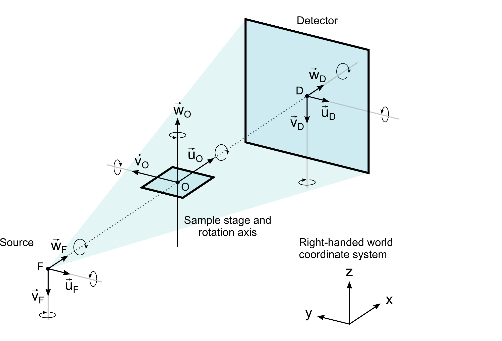
The orientation of the coordinate system and all components can be changed by rotations or by manually setting the object basis vectors. However, it is important to keep the following conventions.
Detector convention
- The detector's
uvector is its row vector. - The detector's
vvector is its column vector. - The detector's
wvector has no special meaning. It is a planar normal that must be chosen such that the detector's coordinate system remains right-handed.
Stage convention
- The stage's
wvector is its axis of CT rotation. - The stage's
centertypically refers to the center of the reconstructed volume (possibly the center of the specimen) and is not meant to describe the location of the turntable (which would normally be at a lower position).
Source convention
There is currently no restriction on the source coordinate system. We usually assume its w axis to be the direction of the principal ray, but this is not a necessity.
In the following examples, the source will be located at the origin (0, 0, 0) of the world coordinate system, whereas stage and detector are placed in positive x direction (see figure above).
Example Setup
In the following example, we set up a standard CT geometry.
# -*- coding: UTF-8 -*-
# File: examples/geometry/02_simple_CT_geometry.py
from ctsimu.geometry import *
# General CT parameters:
SOD = 250.0 # mm
SDD = 800.0 # mm
pixelSize = 0.2 # mm
pixelColumns = 2000
pixelRows = 1000
# Create a CT geometry object:
myCT = Geometry()
# Stage:
myCT.stage.center.set_x(SOD)
# Detector:
myCT.detector.center.set_x(SDD)
myCT.detector.set_size(
pixels_u = pixelColumns,
pixels_v = pixelRows,
pitch_u = pixelSize,
pitch_v = pixelSize
)
myCT.update() # calculates derived geometry parameters
print(myCT.info())
Reference Frames
Implicitly, each coordinate system has a reference coordinate system (its reference frame) in which its center and u, v, w basis vectors are located and described. Typically, we assume that this is a right-handed standard coordinate system. It does not necessarily have to be the world coordinate system. For example, you might want to attach a specimen to the sample stage by implicitly making the stage coordinate system its reference coordinate system. You, the programmer, have to know the reference coordinate system of your objects, as this information is not explicitly stored by the toolbox.
Any new CoordinateSystem object is initialized to be a right-handed standard coordinate system with its center at (0, 0, 0):
from ctsimu.geometry import *
myWorld = CoordinateSystem()
print("My World:")
print(myWorld)
"""
My World:
Center: ( 0.0000000, 0.0000000, 0.0000000)
u: ( 1.0000000, 0.0000000, 0.0000000)
v: ( 0.0000000, 1.0000000, 0.0000000)
w: ( 0.0000000, 0.0000000, 1.0000000)
"""
You can change the reference frame of a CoordinateSystem. In the following example, we set up a CT geometry with a stage that is tilted by 2°. We place a specimen object in the stage coordinate system and move it "upwards" by 5 mm along the (now tilted) axis of rotation. Afterwards, we change the specimen's reference frame to see where it is actually located in the world coordinate system. Refer to the image of the standard orientations above to see what is going on with the coordinate systems.
# -*- coding: UTF-8 -*-
# File: examples/geometry/03_reference_frames.py
import math
from ctsimu.geometry import * # also contains ctsimu_world
# Set up a quick CT geometry with a tilted stage axis:
myCT = Geometry()
myCT.stage.center.set_x(250) # SOD
myCT.stage.rotate_around_u(angle = math.radians(2.0))
myCT.detector.center.set_x(800) # SDD
# Assume a specimen in the (tilted) stage
# coordinate system, shifted 5 mm "upwards"
# along the axis of rotation:
mySpecimen = CoordinateSystem()
mySpecimen.translate_z(5.0)
# Change the specimen's reference frame to
# the world coordinate system:
mySpecimen.change_reference_frame(
cs_from = myCT.stage,
cs_to = ctsimu_world
)
print("The specimen's world coordinates:")
print(mySpecimen)
"""
The specimen's world coordinates:
Center: ( 250.0000000, -0.1744975, 4.9969541)
u: ( 1.0000000, 0.0000000, 0.0000000)
v: ( 0.0000000, 0.9993908, 0.0348995)
w: ( 0.0000000, -0.0348995, 0.9993908)
"""
Note: When changing reference frames, the original (cs_from) and the target reference frame (cs_to) must both have the same common reference frame for themselves. In the example above, we change the reference frame from the stage coordinate system to the world coordinate system. Both of them have the same reference frame: the world coordinate system (which is special, because it is also a reference for itself).
Projection Matrices
A projection matrix maps a 3D point coordinate (x, y, z) from the stage coordinate system to a 2D point coordinate (u, v) in the detector coordinate system. They are used by some reconstruction softwares to describe arbitrary scan trajectories. For such a reconstruction, we need one projection matrix for each projection image.
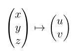
Mathematical Background
We operate in homogeneous coordinates because we are in a projective geometry and this concept allows us to describe translations in space by a matrix. Homogeneous coordinates describe rays in a space and are therefore only defined up to a scale factor, which is carried as an additional coordinate. This way, a Euclidean 3-vector turns into a homogeneous 4-vector. Our mapping becomes:
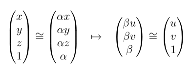
The following picture illustrates a 1D projective geometry. The h axis is our scale factor for the homogeneous coordinates. In this geometry, all points on a ray are equivalent. The points at h=1 are the normalized homogeneous coordinates.
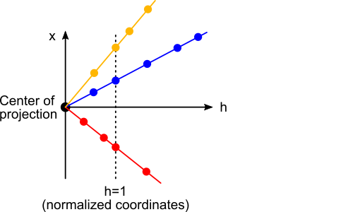
We can use this concept to describe translations in space with a matrix multiplication:
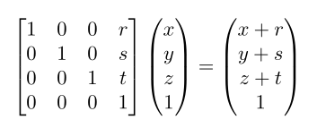
We now consider two coordinate systems: the stage coordinate system (our origin) and the detector coordinate system (our target). The world coordinate system is not important in this context. In the following picture, 3D coordinates (x, y, z) are expressed in terms of the stage coordinate system and 2D coordinates (u, v) are expressed in terms of the detector coordinate system (ignoring its w axis).
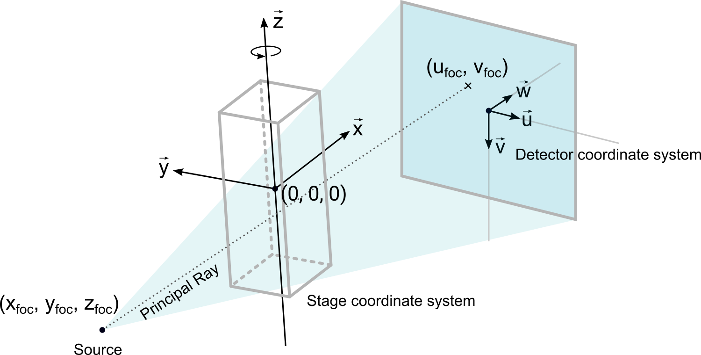
To calculate a projection matrix for the current geometry, we have to consider five subsequent transformations. Each transformation is expressed by a matrix. The final projection matrix is then the product of these five transformation matrices.
-
We shift the origin of the coordinate system from the stage to the source, which is our center of projection. The scaling factors sx, sy and sz take care of converting the volume units into the units of the world coordinate system, for example from voxels to millimeters.
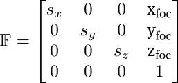
-
We perform a basis transformation to express the 3D coordinates in terms of the axes of the detector coordinate system. The origin remains at the source. You can also think of this transformation as a rotation into the detector coordinate system.
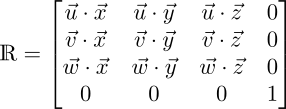
All basis vectors in this matrix are assumed to be unit vectors.
This matrix takes care of any stage or detector tilts.
After this transformation, the third ("z") coordinate in a vector now refers to its position on the detector normal (its w axis). Therefore, this third coordinate now contains something similar to what we would normally call the SOD (source-object distance) of that point. The fourth coordinate of our homogeneous vector has not been scaled so far (α=1), which means we have not left the projective plane which we call home (our real world). This is important to keep in mind for the next step.
-
We use a matrix that reduces the dimension of our vector by one (from a homogeneous 4-vector to a homogeneous 3-vector). This step is sometimes called the actual projection.
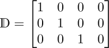
In the previous step, the third component of the 4-vector used to be something similar to the SOD. This has now become the scale component β of our homogeneous 3-vector (because a multiplication with this matrix throws away the fourth vector component, which has still been α=1). This means we are now in a projective plane β=SOD, away from the detector plane of our home world (which would be at β=1).
This problem is solved in the end by a simple renormalization of the matrix and implicitly will give us the correct magnification factor. Stay tuned!
-
We take care of the magnification and any additional scaling.
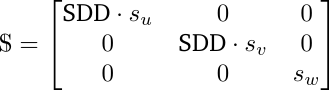
The SDD (source-detector distance) in this case means the length of the principal ray from source to detector (i.e., the ray that is parallel to the detector normal w and orthogonally hits the detector plane).
This matrix simply scales any image at the projective plane β=1 such that its u and v component will obey the magnification by the SDD (source-detector distance). The scaling factors su and sv take care of the unit conversion from the world coordinate system to the image coordinate system, e.g. from millimeters to pixels. The scaling factor sw for the image's normal vector is usually
1or-1, depending on which kind of image coordinate system is expected by the reconstruction software.Note that the final renormalization will turn out to be a division by the SOD (as mentioned in the previous step). This will convert the SDD-factors of this matrix into the actual magnification: M=SDD/SOD. We do not incorporate this here because the SOD as a parameter is not well-defined and might lead to confusion in a non-standard geometry.
-
The origin of the detector coordinate system might not be where the principal ray hits the detector (i.e., the center of projection projected onto the detector). We need to take care of this additional shift:
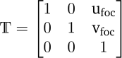
The final projection matrix is a 3×4 matrix that results from a multiplication of these five matrices and a renormalization by the lower-right component (p23) to get back to the projective plane of our home world (see step 3).
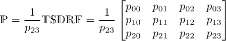
Generating Projection Matrices
You can call the function Geometry.projection_matrix() to get a projection matrix for the geometry's current configuration.
# -*- coding: UTF-8 -*-
# File: examples/geometry/04_projection_matrix.py
from ctsimu.geometry import *
# Set up a quick CT geometry:
myCT = Geometry()
myCT.stage.center.set_x(250) # SOD
myCT.detector.center.set_x(800) # SDD
# Calculate the projection matrix:
P = myCT.projection_matrix()
print("Projection Matrix:")
print(P)
"""
Projection Matrix:
[[ 0. 3.2 0. 0. ]
[ 0. 0. 3.2 0. ]
[-0.004 0. 0. 1. ]]
"""
openCT & CERA
The toolbox provides two pre-configured modes to calculate projection matrices for openCT (which can be used in VGSTUDIO MAX) and for SIEMENS CERA. Each software needs slightly different projection matrices, because they define their detector coordinate system in different ways. See the next section about the image and volume coordinate system for details.
In the following example, we calculate a projection matrix for each software by defining the mode when calling the Geometry.projection_matrix() function.
# -*- coding: UTF-8 -*-
# File: examples/geometry/05_projection_matrix_modes.py
from ctsimu.geometry import *
# Set up a quick CT geometry:
myCT = Geometry()
myCT.stage.center.set_x(250) # SOD
myCT.detector.center.set_x(800) # SDD
# Set the detector size:
myCT.detector.set_size(
pixels_u = 2000,
pixels_v = 1000,
pitch_u = 0.2,
pitch_v = 0.2)
# Calculate the projection matrix:
P_openCT = myCT.projection_matrix(mode="OpenCT")
P_CERA = myCT.projection_matrix(mode="CERA")
print("OpenCT:")
print(P_openCT)
print("CERA:")
print(P_CERA)
Image & Volume Coordinate Systems
Depending on the reconstruction software, the image coordinate system of the projection image does not have to match our standard detector coordinate system. Also, the volume coordinate system of the reconstructed volume does not have to match the stage coordinate system.
In the following three examples, we will show how to use the parameters imageCS and volumeCS to define our own image and volume coordinate systems.
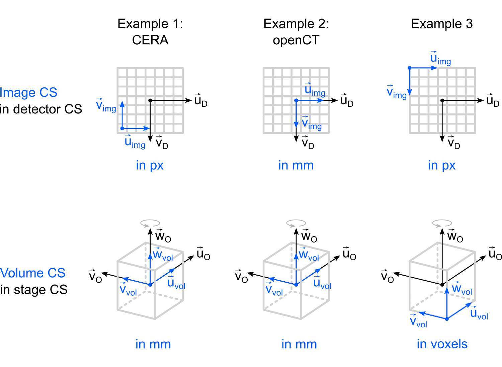
Note: The image coordinate system is expressed in terms of the detector coordinate system (its reference coordinate system). Similarly, the volume coordinate system is expressed in terms of the stage coordinate system. To set the scale factor for the image or volume coordinate system, we set the lengths of their basis vectors to the correct conversion factor (e.g., the pixel size in mm/px or the voxel size in mm/voxel).
Example 1: CERA
Even though we have a pre-defined mode for CERA, we will use its image coordinate system (illustrated above) to show how to set up an image coordinate system for CERA manually.
CERA's volume coordinate system matches our stage coordinate system, but we flip the volume's w axis. Usually, this helps importing the volume into third-party 3D volumetric processing software. If we wouldn't do this step, the volume is usually flipped (mirrored) in common visualizers.
CERA's image coordinate system has its origin in the center of the lower left pixel of the detector. This means we have to move its origin by half the detector's physical width to the left and half the detector's physical height downwards from the origin of the detector coordinate system, and then back by half a physical pixel size (the detector pitch). We can use the attributes phys_width and phys_height, which are automatically calculated when calling DetectorGeometry.set_size().
# -*- coding: UTF-8 -*-
# File: examples/geometry/06_projection_matrix_cera.py
from ctsimu.geometry import *
# Set up a quick CT geometry:
myCT = Geometry()
myCT.stage.center.set_x(250) # SOD
myCT.detector.center.set_x(800) # SDD
# Set the detector size:
myCT.detector.set_size(
pixels_u = 2000,
pixels_v = 1000,
pitch_u = 0.2,
pitch_v = 0.2)
# Set up a new image coordinate system,
# relative to the detector coordinate system:
image = CoordinateSystem()
# CERA places the origin of the image CS in the center
# of the lower left pixel of the projection image.
image.center.set_x(-(myCT.detector.phys_width / 2.0) + 0.5*myCT.detector.pitch_u)
image.center.set_y( (myCT.detector.phys_height / 2.0) - 0.5*myCT.detector.pitch_v)
# CERA's unit of the image CS is in px, so we need to
# scale the image CS basis vectors by the pixel size.
# Also, v points up instead of down. This also flips
# the w axis to keep a right-handed coordinate system.
image.u.scale( myCT.detector.pitch_u)
image.v.scale(-myCT.detector.pitch_v)
# CERA's volume coordinate system is equivalent to the CTSimU stage coordinate
# coordinate system, but flipped vertically. Therefore, we need to
# invert the volume's w axis.
volume = CoordinateSystem()
volume.w.invert()
# Calculate the projection matrix:
P = myCT.projection_matrix(imageCS=image, volumeCS=volume)
print("CERA projection matrix:")
print(P)
"""
CERA projection matrix:
[[-3.998e+00 1.600e+01 0.000e+00 9.995e+02]
[-1.998e+00 0.000e+00 1.600e+01 4.995e+02]
[-4.000e-03 0.000e+00 0.000e+00 1.000e+00]]
"""
Example 2: openCT
In the case of openCT, the image coordinate system matches our detector coordinate system. Also, the volume coordinate system matches our definition of the stage coordinate system. However, as in the case of CERA, we will flip the reconstruction volume to make it easier to import it into 3D visualization software.
# -*- coding: UTF-8 -*-
# File: examples/geometry/07_projection_matrix_openCT.py
from ctsimu.geometry import *
# Set up a quick CT geometry:
myCT = Geometry()
myCT.stage.center.set_x(250) # SOD
myCT.detector.center.set_x(800) # SDD
# Set the detector size:
myCT.detector.set_size(
pixels_u = 2000,
pixels_v = 1000,
pitch_u = 0.2,
pitch_v = 0.2)
# Set up a new volume coordinate system
# as a standard coordinate system,
# relative to the stage coordinate system:
volume = CoordinateSystem()
volume.w.invert() # mirror reconstruction volume
# Calculate the projection matrix:
P = myCT.projection_matrix(volumeCS = volume)
print("openCT projection matrix:")
print(P)
"""
openCT projection matrix:
[[ 0. 3.2 0. 0. ]
[ 0. 0. -3.2 0. ]
[-0.004 0. 0. 1. ]]
"""
Example 3
For the third example (see illustration), we will have to move the origin of the image coordinate system to the upper left corner of the detector and scale its basis vectors by the pixel size because its units are pixels.
The volume coordinate system has its origin at the front lower right corner of the reconstruction volume. Because it is no longer at the stage's center, we will actually have to define the volume's physical size in order to correctly calculate the corner coordinate in terms of the stage coordinate system.
We also scale the basis vectors of the volume coordinate system by the voxel size, because we assume that our reconstruction software expresses its volume coordinates in voxel units instead of world units (mm).
# -*- coding: UTF-8 -*-
# File: examples/geometry/08_projection_matrix_example3.py
from ctsimu.geometry import *
# Set up a quick CT geometry:
myCT = Geometry()
myCT.stage.center.set_x(250) # SOD in mm
myCT.detector.center.set_x(800) # SDD in mm
# Set the detector size:
myCT.detector.set_size(
pixels_u = 2000,
pixels_v = 1000,
pitch_u = 0.2,
pitch_v = 0.2)
# Define the size of the reconstruction volume:
volume_size_x = 2000 # voxels
volume_size_y = 2000 # voxels
volume_size_z = 1000 # voxels
voxel_size = 0.0625 # mm/voxel
# Set up a new image coordinate system,
# relative to the detector coordinate system:
image = CoordinateSystem()
# Move the image origin to the upper left corner
# of the detector coordinate system:
image.center.set_x(-myCT.detector.phys_width / 2.0)
image.center.set_y(-myCT.detector.phys_height / 2.0)
# Our unit of the image CS is in px, so we need to
# scale the image CS basis vectors by the pixel size.
image.u.scale(myCT.detector.pitch_u)
image.v.scale(myCT.detector.pitch_v)
# Set up a new volume coordinate system,
# relative to the stage coordinate system:
volume = CoordinateSystem()
# Move the volume origin to the front lower right
# corner of the reconstruction volume:
volume.center.set_x(-volume_size_x * voxel_size / 2.0)
volume.center.set_y(-volume_size_y * voxel_size / 2.0)
volume.center.set_z(-volume_size_z * voxel_size / 2.0)
# Our unit of the volume CS is in voxels, so we need to
# scale the volume CS basis vectors by the voxel size.
volume.u.scale(voxel_size)
volume.v.scale(voxel_size)
volume.w.scale(voxel_size)
# Calculate the projection matrix:
P = myCT.projection_matrix(imageCS=image, volumeCS=volume)
print("My projection matrix:")
print(P)
"""
My projection matrix:
[[-3.33333333e-01 1.33333333e+00 0.00000000e+00 2.33333333e+03]
[-1.66666667e-01 0.00000000e+00 1.33333333e+00 1.16666667e+03]
[-3.33333333e-04 0.00000000e+00 0.00000000e+00 1.00000000e+00]]
"""
Simulating a complete CT scan
A single projection matrix is not enough to describe a full CT scan. We need one projection matrix for each frame (i.e., for each projection image).
We can use a loop to set up each frame and collect the projection matrices in a list. Afterwards, we can pass this list of matrices to the function create_OpenCT_config() or create_CERA_config() to create specific reconstruction configuration files for each reconstruction software.
In the loop, it is advisable not to rotate the stage incrementally for each frame by a certain angular increment. This could lead to the accumulation of small floating-point rounding inaccuracies. Instead, we create a backup of the initial setup (at frame zero) using the Geometry.store() function. In each step of the loop, we restore this initial configuration by calling Geometry.restore() and then rotate the stage to its current absolute angle. This approach parameterizes the whole CT trajectory as a deterministic function that only depends on the initial configuration and the current frame number. It is preferred over incremental changes in a loop, but might not always be feasible.
The following example shows how to simulate a simple CT scan (one full stage rotation with 3000 equidistant projection images) and how to create configuration files for the reconstruction.
# -*- coding: UTF-8 -*-
# File: examples/geometry/09_projection_matrix_full_CT.py
import math
from ctsimu.geometry import *
# Set up a quick CT geometry:
myCT = Geometry()
myCT.stage.center.set_x(250) # SOD in mm
myCT.detector.center.set_x(800) # SDD in mm
# Set the detector size:
myCT.detector.set_size(
pixels_u = 2000,
pixels_v = 1000,
pitch_u = 0.2,
pitch_v = 0.2)
myCT.update() # signal that we made manual changes
myCT.store() # backup the initial configuration
# Scan configuration:
projections = 3000 # number of projections or angular steps
scan_range = 360.0 # degrees. One full CT rotation.
# We assume that the projections are stored in single TIFF image files,
# sequentially numbered with four digits, starting at "img_0000.tif".
projection_filename = "img_{:04d}.tif" # for OpenCT
projection_file_pattern = "img_%04d.tif" # for CERA
# The following two lists will store the projection matrices
# for openCT and for CERA:
matrices_openCT = []
matrices_CERA = []
# For openCT, we also need to create a list of projection file names:
projection_filenames = []
# Loop over each frame:
for p in range(projections):
# Restore the initial configuration from the backup,
# i.e. the situation before the stage was rotated:
myCT.restore()
# Rotate the stage to its current angle:
current_angle = float(p) * float(scan_range) / float(projections)
myCT.stage.rotate_around_w(angle=math.radians(current_angle))
myCT.update()
# Calculate a projection matrix for this frame:
P_openCT = myCT.projection_matrix(mode="OpenCT")
P_CERA = myCT.projection_matrix(mode="CERA")
# Add to list of projection matrices:
matrices_openCT.append(P_openCT)
matrices_CERA.append(P_CERA)
# Store the current projection filename for openCT:
projection_filenames.append(projection_filename.format(p))
# Restore CT setup for frame zero:
myCT.restore()
# openCT configuration:
# ----------------------
# Write the openCT configuration file, including the projection matrices:
create_OpenCT_config(
geo=myCT,
filename="example_09/recon_openCT.json",
projection_files=projection_filenames,
matrices=matrices_openCT,
volumename="recon_openCT"
)
# CERA configuration:
# -------------------
# Write the CERA configuration file, including the projection matrices:
create_CERA_config(
geo=myCT,
total_angle=scan_range,
projection_file_pattern=projection_file_pattern,
matrices=matrices_CERA,
basename="recon_CERA",
save_dir="example_09",
i0max=44000 # maximum free-beam intensity
)
Functions
def basis_transform_matrix(cs_from: CoordinateSystem, cs_to: CoordinateSystem) ‑> Matrix-
A matrix that transforms coordinates from
cs_fromtocs_to.cs_fromandcs_tomust have the same common reference frame (e.g. the world coordinate system). A shift in origins is not taken into account, i.e., their origins are assumed to be at the same position.Parameters
cs_from:CoordinateSystem- The origin coordinate system.
cs_to:CoordinateSystem- The target coordinate system.
Returns
T:Matrix- The 3x3 basis transformation matrix.
References
def change_reference_frame_of_direction(direction: Vector, cs_from: CoordinateSystem, cs_to: CoordinateSystem) ‑> Vector-
For a
directionincs_from, get the new direction in terms ofcs_to.cs_fromandcs_tomust be in the same reference coordinate system.Parameters
direction:Vector- Direction in terms of
cs_from. cs_from:CoordinateSystem- The original coordinate system.
cs_to:CoordinateSystem- The target coordinate system, in which the direction should be expressed.
Returns
direction_in_cs_to:Vector- The direction in terms of cs_to.
def change_reference_frame_of_point(point: Vector, cs_from: CoordinateSystem, cs_to: CoordinateSystem) ‑> Vector-
For a
pointcoordinate incs_from, get the new coordinate in terms ofcs_to.cs_fromandcs_tomust be in the same reference coordinate system.Parameters
point:Vector- Point coordinates in terms of
cs_from. cs_from:CoordinateSystem- The original coordinate system.
cs_to:CoordinateSystem- The target coordinate system, in which the point coordinates should be expressed.
Returns
point_in_cs_to:Vector- The point coordinates in terms of cs_to.
def create_CERA_config(geo: Geometry, projection_file_pattern: str, basename: str, save_dir: str = None, n_projections: int = None, flip_u: bool = False, flip_v: bool = True, projection_datatype: str = 'float32', projection_filetype: str = 'tiff', projection_byteorder: str = 'little', projection_headersize: int = 0, start_angle: float = 0, total_angle: float = 360, scan_direction='CCW', voxels_x: int = None, voxels_y: int = None, voxels_z: int = None, voxelsize_x: float = None, voxelsize_y: float = None, voxelsize_z: float = None, i0max: float = 60000, output_datatype: str = 'float32', matrices: list = None)-
Write a CERA config file for the given geometry.
A circular trajectory for the given angular range is assumed, all parameters of the output config file will reflect a circular behaviour (obeying static tilts). For non-circular trajectories, provide a list of projection matrices.
Parameters
geo:Geometry- A geometry that should represent the CT setup at frame zero, as seen by the reconstruction software.
projection_file_pattern:str-
Pattern for the sequential projection files.
Example:
"../projections/corrected/example_%04d.tif" basename:str- Base name for the configuration files and table of projection matrices.
save_dir:str-
Directory where the configuration files will be stored.
Standard value:
None(local script directory) n_projections:int-
Number of projections. Set to
Noneif number of projections should be inferred from the number of provided projection matrices.Standard value:
None flip_u:bool-
Flip projection images horizontally before reconstruction?
Standard value:
False flip_v:bool-
Flip projection images vertically before reconstruction?
Standard value:
True projection_datatype:str-
Data type of the projection images, as well as possible bright and dark images and the bad pixel map.
Allowed values:
"uint16","float32"Standard value:
"float32" projection_filetype:str-
File type of the projection images, as well as possible bright and dark images and the bad pixel map.
Allowed values:
"raw"or"tiff"Standard value:
"tiff" projection_headersize:int-
For RAW projection images: header size to skip (in bytes).
Standard value:
0 projection_byteorder:str-
For RAW projection images: endianness of the files.
Allowed values:
"little"or"big"Standard value:
"little" start_angle:float-
Reconstruction start angle (in degrees). The start angle can be tuned to change the in-plane rotation of the reconstruction images. Depending on the current stage rotation in this geometry, the start angle will be adjusted. Consider this parameter more like an offset to the start angle of stage rotation.
Standard value:
0 total_angle:float-
Total angular range of the CT scan (in degrees).
Standard value:
360 scan_direction:str-
Direction of stage rotation, either
"CCW"for counter-clockwise or"CW"for clockwise rotation.Standard value:
"CCW" voxels_x:int-
Number of voxels in x direction of the reconstruction volume. Set to
Nonefor a default value based on the detector pixels.Standard value:
None voxels_y:int-
Number of voxels in y direction of the reconstruction volume. Set to
Nonefor a default value based on the detector pixels.Standard value:
None voxels_z:int-
Number of voxels in z direction of the reconstruction volume. Set to
Nonefor a default value based on the detector pixels.For helix scans, this parameter should be increased because the default voxel size in z direction corresponds to the detector height, whereas a helix scan usually covers much more than the detector height.
Standard value:
None voxelsize_x:float-
Voxel size in x direction of the reconstruction volume. Set to
Nonefor a default value based on the detector pixel size and magnification.Standard value:
None voxelsize_y:float-
Voxel size in y direction of the reconstruction volume. Set to
Nonefor a default value based on the detector pixel size and magnification.Standard value:
None voxelsize_z:float-
Voxel size in z direction of the reconstruction volume. Set to
Nonefor a default value based on the detector pixel size and magnification.Standard value:
None i0max:float-
Grey value for the maximum free-beam intensity in the projection images.
Standard value:
60000 output_datatype:str-
Data type for the reconstruction volume output file. Either
"float32"or"uint16".Standard value:
"float32" matrices:list- List of projection matrices of type
Matrix. One matrix for each projection image is required. If this parameter is set toNone, the configuration will be set up for a circular scan trajectory (obeying static tilts).
def create_OpenCT_config(geo: Geometry, filename: str = None, variant: str = 'free', projection_files: list = None, projection_dir: str = None, flip_u: bool = False, flip_v: bool = False, projection_datatype: str = 'float32', projection_filetype: str = 'tiff', projection_headersize: int = 0, projection_byteorder: str = 'little', detector_coordinate_frame='OriginAtDetectorCenter.VerticalAxisRunningDownwards', detector_coordinate_dimension='Length', total_angle: float = None, scan_direction: str = 'CCW', matrices: list = None, volumename: str = None, bb_center_x: float = 0, bb_center_y: float = 0, bb_center_z: float = 0, voxels_x: int = None, voxels_y: int = None, voxels_z: int = None, voxelsize_x: float = None, voxelsize_y: float = None, voxelsize_z: float = None, bright_image_dir: str = None, bright_images: list = None, dark_image: str = None, bad_pixel_mask: str = None) ‑> dict-
Create an OpenCT free trajectory CBCT configuration and optionally write to file.
Parameters
geo:Geometry- A geometry that should represent the CT setup at frame zero, as seen by the reconstruction software.
variant:str-
Which variant of the OpenCT file format is created. Options:
"free"and"circular".Standard value:
"free" filename:str-
Path and filename for the OpenCT configuration file to be written. If no file should be written, set this to
None.Standard value:
None projection_files:list- List of projection file names.
projection_dir:str-
Path where the projection images are stored.
Standard value:
None flip_u:bool-
Flip projection images horizontally before reconstruction?
Standard value:
False flip_v:bool-
Flip projection images vertically before reconstruction?
Standard value:
False projection_datatype:str-
Data type of the projection images, as well as possible bright and dark images and the bad pixel map.
Allowed values:
"uint8","uint16","uint32","int8","int16","int32","float32"Standard value:
"float32" projection_filetype:str-
File type of the projection images, as well as possible bright and dark images and the bad pixel map.
Allowed values:
"raw"or"tiff"Standard value:
"tiff" projection_headersize:int-
For RAW projection images: header size to skip (in bytes).
Standard value:
0 projection_byteorder:str-
For RAW projection images: endianness of the files.
Allowed values:
"little"or"big"Standard value:
"little" detector_coordinate_frame:str-
A string that defines the orientation of the detector coordinate system with respect to the projection images.
Possible values:
"OriginAtDetectorCenter.VerticalAxisRunningUpwards""OriginAtDetectorCenter.VerticalAxisRunningDownwards""OriginAtDetectorTopLeftCorner""OriginAtDetectorBottomLeftCorner"
Standard value:
"OriginAtDetectorCenter.VerticalAxisRunningDownwards" detector_coordinate_dimension:str-
A string that defines the unit of the detector coordinate system.
Possible values:
"Length"for physical length units (usually mm)."PixelCount"if projection matrices refer to a pixel coordinate system.
Standard value:
"Length" total_angle:float-
Total angular range (in deg) of the CT scan. This parameter is only really needed for the strict circular trajectory variant of the file format, but not for free trajectories.
Standard value:
None scan_direction:str-
Direction of stage rotation, either
"CCW"for counter-clockwise or"CW"for clockwise rotation. Only relevant for circular trajectory variant.Standard value:
"CCW" matrices:list-
List of projection matrices of type
Matrix. One matrix for each projection image is required for the free trajectory variant of the OpenCT file format. For the circular trajectory variant, the matrices are not required.Standard value:
None volumename:str-
Optional name for the reconstruction volume.
Standard value:
None bb_center_x:float-
Position (in x direction) of the reconstruction volume bounding box. Center position in respect to the stage coordinate system.
Standard value:
0 bb_center_y:float-
Position (in y direction) of the reconstruction volume bounding box. Center position in respect to the stage coordinate system.
Standard value:
0 bb_center_z:float-
Position (in z direction) of the reconstruction volume bounding box. Center position in respect to the stage coordinate system.
Standard value:
0 voxels_x:int-
Number of voxels in x direction of the reconstruction volume. Set to
Nonefor a default value based on the detector pixels.Standard value:
None voxels_y:int-
Number of voxels in y direction of the reconstruction volume. Set to
Nonefor a default value based on the detector pixels.Standard value:
None voxels_z:int-
Number of voxels in z direction of the reconstruction volume. Set to
Nonefor a default value based on the detector pixels.For helix scans, this parameter should be increased because the default voxel size in z direction corresponds to the detector height, whereas a helix scan usually covers much more than the detector height.
Standard value:
None voxelsize_x:float-
Voxel size in x direction of the reconstruction volume. Set to
Nonefor a default value based on the detector pixel size and magnification.Standard value:
None voxelsize_y:float-
Voxel size in y direction of the reconstruction volume. Set to
Nonefor a default value based on the detector pixel size and magnification.Standard value:
None voxelsize_z:float-
Voxel size in z direction of the reconstruction volume. Set to
Nonefor a default value based on the detector pixel size and magnification.Standard value:
None bright_image_dir:str-
Optional directory where bright correction images are stored.
Standard value:
None bright_images:list-
List of file names of bright correction images.
Standard value:
None dark_image:str-
Path to a dark correction image.
Standard value:
None bad_pixel_mask:str-
Path to a bad pixel mask for correction.
Standard value:
None
Returns
openct_config:dict- Dictionary that represents the JSON structure of the OpenCT file.
Classes
class CoordinateSystem-
Coordinate system: center point and axis vectors.
The center and axis vectors are expressed in terms of the object's reference coordinate system, which must be known implicitly when objects of this class are used.
Attributes
center:Vector- The location of the center point in a reference coordinate system (usually world or stage).
u:Vector- Basis vector for the u axis.
v:Vector- Basis vector for the v axis.
w:Vector- Basis vector for the w axis.
Initialized as a standard world coordinate system.
Expand source code
class CoordinateSystem: """Coordinate system: center point and axis vectors. The center and axis vectors are expressed in terms of the object's reference coordinate system, which must be known implicitly when objects of this class are used. Attributes ---------- center : ctsimu.primitives.Vector The location of the center point in a reference coordinate system (usually world or stage). u : ctsimu.primitives.Vector Basis vector for the u axis. v : ctsimu.primitives.Vector Basis vector for the v axis. w : ctsimu.primitives.Vector Basis vector for the w axis. """ def __init__(self): """Initialized as a standard world coordinate system.""" self.center = Vector(0, 0, 0) self.u = Vector(1, 0, 0) self.v = Vector(0, 1, 0) self.w = Vector(0, 0, 1) def __str__(self): """Information string for easy printing.""" txt = "Center: {}\n".format(self.center) txt += "u: {}\n".format(self.u) txt += "v: {}\n".format(self.v) txt += "w: {}\n".format(self.w) return txt def reset(self): """Reset to a standard world coordinate system.""" self.center = Vector(0, 0, 0) self.u = Vector(1, 0, 0) self.v = Vector(0, 1, 0) self.w = Vector(0, 0, 1) def make_unit_coordinate_system(self): """Convert all basis vectors into unit vectors.""" self.u.make_unit_vector() self.v.make_unit_vector() self.w.make_unit_vector() self.update() def make_from_vectors(self, center:'Vector', u:'Vector', w:'Vector'): """Create a right-handed coordinate system from the `center`, `u` vector (first basis vector) and `w` vector (third basis vector). The vector `v` will be determined from the cross product `w`×`u`. Parameters ---------- center : ctsimu.primitives.Vector Object's center point in reference coordinate system, origin of local {u,v,w} coordinate system. u : ctsimu.primitives.Vector Basis vector u in terms of reference coordinate system. w : ctsimu.primitives.Vector Basis vector w in terms of reference coordinate system. Notes ----- Basis vectors must be orthogonal. """ self.center = center self.u = u self.w = w self.v = self.w.cross(self.u) self.update() def make(self, cx:float, cy:float, cz:float, ux:float, uy:float, uz:float, wx:float, wy:float, wz:float): """Set up the coordinate system from vector components (all floats) for the center (`cx`, `cy`, `cz`), the `u` vector (first basis vector, `ux`, `uy`, `uz`) and the `w` vector (third basis vector, `wx`, `wy`, `wz`). Parameters ---------- cx : float Center x coordinate. cy : float Center y coordinate. cz : float Center z coordinate. ux : float `u` vector x component. uy : float `u` vector y component. uz : float `u` vector z component. wx : float `w` vector x component. wy : float `w` vector y component. wz : float `w` vector z component. """ self.center = Vector(cx, cy, cz) self.u = Vector(ux, uy, uz) self.w = Vector(wx, wy, wz) self.v = self.w.cross(self.u) self.update() def set_u_w(self, u:'Vector', w:'Vector'): """Set u and w vector, calculate v from cross product (right-handed). Parameters ---------- u : ctsimu.primitives.Vector Basis vector for u direction. v : ctsimu.primitives.Vector Basis vector for v direction. """ self.u = u self.w = w self.v = w.cross(u) def get_copy(self) -> 'CoordinateSystem': """Get a copy of this coordinate system. Returns ------- copy_cs : CoordinateSystem Copy of this coordinate system. """ new_cs = CoordinateSystem() new_cs.center = Vector(self.center.x(), self.center.y(), self.center.z()) new_cs.u = Vector(self.u.x(), self.u.y(), self.u.z()) new_cs.v = Vector(self.v.x(), self.v.y(), self.v.z()) new_cs.w = Vector(self.w.x(), self.w.y(), self.w.z()) return new_cs def copy_cs(self, other:'CoordinateSystem'): """Make this CoordinateSystem a copy of the `other` coordinate system. Parameters ---------- other : CoordinateSystem Another coordinate system to copy. """ self.center = other.center.get_copy() self.u = other.u.get_copy() self.v = other.v.get_copy() self.w = other.w.get_copy() def update(self): """Signal a manual update to the center position or orientation vectors.""" self.center.update() self.u.update() self.v.update() self.w.update() def translate(self, translation_vector:'Vector'): """Shift center by given translation vector. Parameters ---------- translation_vector : ctsimu.primitives.Vector Vector by which the object's center point should be shifted. Its components are added to the center's components. """ self.center.add(translation_vector) def translate_in_direction(self, direction:'Vector', distance:float): """Shift center in given `direction` by given `distance`. Parameters ---------- direction : ctsimu.primitives.Vector Vector along which the center point should be shifted. It must not be a unit vector. distance : float Distance by which the center point will travel """ t = direction.unit_vector().scaled(factor=distance) self.translate(translation_vector=t) def translate_x(self, dx:float): """Translate coordinate system in x direction of reference coordinate system by distance `dx`. Parameters ---------- dx : float Shift amount in x direction. """ self.center.set_x(self.center.x() + float(dx)) def translate_y(self, dy: float): """Translate coordinate system in y direction of reference coordinate system by distance `dy`. Parameters ---------- dy : float Shift amount in y direction. """ self.center.set_y(self.center.y() + float(dy)) def translate_z(self, dz: float): """Translate coordinate system in z direction of reference coordinate system by distance `dz`. Parameters ---------- dz : float Shift amount in z direction. """ self.center.set_z(self.center.z() + float(dz)) def translate_u(self, du:float): """Translate coordinate system in u direction by distance `du`. Parameters ---------- du : float Shift amount in u direction. """ self.translate_in_direction(direction=self.u, distance=du) def translate_v(self, dv:float): """Translate coordinate system in v direction by distance `dv`. Parameters ---------- dv : float Shift amount in v direction. """ self.translate_in_direction(direction=self.v, distance=dv) def translate_w(self, dw:float): """Translate coordinate system in w direction by distance `dw`. Parameters ---------- dw : float Shift amount in w direction. """ self.translate_in_direction(direction=self.w, distance=dw) def rotate(self, axis:'Vector', angle:float): """Rotate coordinate system around a given axis by the given angle (in rad). This does not move the center point, as the axis vector is assumed to be attached to the center of the coordinate system. Parameters ---------- axis : ctsimu.primitives.Vector The axis of rotation, in terms of the object's reference coordinate system. angle : float Rotation angle (in rad), mathematically positive direction (right-hand rule). """ R = rotation_matrix(axis, angle) self.u.transform(R) self.v.transform(R) self.w.transform(R) def rotate_around_pivot_point(self, axis:'Vector', angle:float, pivot:'Vector'): """Rotate coordinate system around a pivot point. Generally, this will result in a different center position, as the axis of rotation is assumed to be attached to the pivot point instead of the center of the coordinate system. Parameters ---------- axis : ctsimu.primitives.Vector Rotation axis, in terms of the object's reference coordinate system. angle : float Rotation angle (in rad). pivot : ctsimu.primitives.Vector Pivot point, in terms of the object's reference coordinate system. """ # Move coordinate system such that pivot point is at world origin: self.center.subtract(pivot) # Rotate center point and transform back into # world coordinate system: self.center.rotate(axis, angle) self.center.add(pivot) # Rotate the coordinate system itself: self.rotate(axis, angle) def rotate_around_x(self, angle: float): """Rotate object around x axis of its reference coordinate system by given angle (in rad). Parameters ---------- angle : float Rotation angle in rad, mathematically positive direction (right-hand rule). """ if angle != 0: x_axis = Vector(1, 0, 0) self.rotate(x_axis, angle) def rotate_around_y(self, angle: float): """Rotate object around y axis of its reference coordinate system by given angle (in rad). Parameters ---------- angle : float Rotation angle in rad, mathematically positive direction (right-hand rule). """ if angle != 0: y_axis = Vector(0, 1, 0) self.rotate(y_axis, angle) def rotate_around_z(self, angle: float): """Rotate object around z axis of its reference coordinate system by given angle (in rad). Parameters ---------- angle : float Rotation angle in rad, mathematically positive direction (right-hand rule). """ if angle != 0: z_axis = Vector(0, 0, 1) self.rotate(z_axis, angle) def rotate_around_u(self, angle: float): """Rotate object around its u axis by given angle (in rad). Parameters ---------- angle : float Rotation angle in rad, mathematically positive direction (right-hand rule). """ self.v.rotate(self.u, angle) self.w.rotate(self.u, angle) def rotate_around_v(self, angle: float): """Rotate object around its v axis by given angle (in rad). Parameters ---------- angle : float Rotation angle in rad, mathematically positive direction (right-hand rule). """ self.u.rotate(self.v, angle) self.w.rotate(self.v, angle) def rotate_around_w(self, angle: float): """Rotate object around its w axis by given angle (in rad). Parameters ---------- angle : float Rotation angle in rad, mathematically positive direction (right-hand rule). """ self.u.rotate(self.w, angle) self.v.rotate(self.w, angle) def transform(self, cs_from:'CoordinateSystem', cs_to:'CoordinateSystem'): """Relative transformation in world coordinates from `cs_from` to `cs_to`, result will be in world coordinates. Assuming this CS, `cs_from` and `cs_to` all three are independent coordinate systems in a common reference coordinate system (e.g. world). This function will calculate the necessary translation and rotation that would have to be done to superimpose `cs_from` with `cs_to`. This translation and rotation will, however, be applied to this CS, not to `cs_from`. Parameters ---------- cs_from : CoordinateSystem Coordinate system before the transformation. cs_to : CoordinateSystem Coordinate system after the transformation. """ # -- TRANSLATION: t = cs_from.center.to(cs_to.center) self.translate(t) # We need a copy of cs_from and cs_to because later on, # we might have to transform them and don't want to # affect the original cs_from passed to this function. # Also, cs_from or cs_to could simply be pointers to # this coordinate system. cs_fromCopy = cs_from.get_copy() cs_toCopy = cs_to.get_copy() # -- ROTATIONS # Rotation to bring w axis from -> to wFrom = cs_fromCopy.w wTo = cs_toCopy.w rotationAxis = wFrom.cross(wTo) if rotationAxis.length() == 0: if wTo.dot(wFrom) < 0: # 180° flip; vectors point in opposite direction. # Rotation axis is another CS basis vector. rotationAxis = cs_fromCopy.u.get_copy() else: # wFrom already points in direction of wTo. pass if rotationAxis.length() > 0: rotationAngle = wFrom.angle(wTo) if rotationAngle != 0: self.rotate_around_pivot_point(rotationAxis, rotationAngle, cs_toCopy.center) # Also rotate `cs_from` to make calculation of # rotation around u axis possible (next step): cs_fromCopy.rotate(rotationAxis, rotationAngle) # Rotation to bring u axis from -> to (around now fixed w axis) uFrom = cs_fromCopy.u uTo = cs_toCopy.u rotationAxis = uFrom.cross(uTo) if rotationAxis.length() == 0: if uTo.dot(uFrom) < 0: # 180° flip; vectors point in opposite direction. # Rotation axis is another CS basis vector. rotationAxis = cs_fromCopy.w.get_copy() else: # uFrom already points in direction of uTo. pass if rotationAxis.length() > 0: rotationAngle = uFrom.angle(uTo) if rotationAngle != 0: self.rotate_around_pivot_point(rotationAxis, rotationAngle, cs_toCopy.center) def change_reference_frame(self, cs_from:'CoordinateSystem', cs_to:'CoordinateSystem'): """Change the object's reference coordinate system. Parameters ---------- cs_from : CoordinateSystem Current reference coordinate system. cs_to : CoordinateSystem New reference coordinate system. Notes ----- Both `cs_from` and `cs_to` must be in the same reference coordinate system (e.g., the world coordinate system). """ # Rotate basis vectors into cs_to: T = basis_transform_matrix(cs_from, cs_to) self.u.transform(T) self.v.transform(T) self.w.transform(T) self.center = change_reference_frame_of_point(self.center, cs_from, cs_to)Subclasses
Methods
def change_reference_frame(self, cs_from: CoordinateSystem, cs_to: CoordinateSystem)-
Change the object's reference coordinate system.
Parameters
cs_from:CoordinateSystem- Current reference coordinate system.
cs_to:CoordinateSystem- New reference coordinate system.
Notes
Both
cs_fromandcs_tomust be in the same reference coordinate system (e.g., the world coordinate system). def copy_cs(self, other: CoordinateSystem)-
Make this CoordinateSystem a copy of the
othercoordinate system.Parameters
other:CoordinateSystem- Another coordinate system to copy.
def get_copy(self) ‑> CoordinateSystem-
Get a copy of this coordinate system.
Returns
copy_cs:CoordinateSystem- Copy of this coordinate system.
def make(self, cx: float, cy: float, cz: float, ux: float, uy: float, uz: float, wx: float, wy: float, wz: float)-
Set up the coordinate system from vector components (all floats) for the center (
cx,cy,cz), theuvector (first basis vector,ux,uy,uz) and thewvector (third basis vector,wx,wy,wz).Parameters
cx:float- Center x coordinate.
cy:float- Center y coordinate.
cz:float- Center z coordinate.
ux:floatuvector x component.uy:floatuvector y component.uz:floatuvector z component.wx:floatwvector x component.wy:floatwvector y component.wz:floatwvector z component.
def make_from_vectors(self, center: Vector, u: Vector, w: Vector)-
Create a right-handed coordinate system from the
center,uvector (first basis vector) andwvector (third basis vector). The vectorvwill be determined from the cross productw×u.Parameters
center:Vector- Object's center point in reference coordinate system, origin of local {u,v,w} coordinate system.
u:Vector- Basis vector u in terms of reference coordinate system.
w:Vector- Basis vector w in terms of reference coordinate system.
Notes
Basis vectors must be orthogonal.
def make_unit_coordinate_system(self)-
Convert all basis vectors into unit vectors.
def reset(self)-
Reset to a standard world coordinate system.
def rotate(self, axis: Vector, angle: float)-
Rotate coordinate system around a given axis by the given angle (in rad).
This does not move the center point, as the axis vector is assumed to be attached to the center of the coordinate system.
Parameters
axis:Vector- The axis of rotation, in terms of the object's reference coordinate system.
angle:float- Rotation angle (in rad), mathematically positive direction (right-hand rule).
def rotate_around_pivot_point(self, axis: Vector, angle: float, pivot: Vector)-
Rotate coordinate system around a pivot point. Generally, this will result in a different center position, as the axis of rotation is assumed to be attached to the pivot point instead of the center of the coordinate system.
Parameters
def rotate_around_u(self, angle: float)-
Rotate object around its u axis by given angle (in rad).
Parameters
angle:float- Rotation angle in rad, mathematically positive direction (right-hand rule).
def rotate_around_v(self, angle: float)-
Rotate object around its v axis by given angle (in rad).
Parameters
angle:float- Rotation angle in rad, mathematically positive direction (right-hand rule).
def rotate_around_w(self, angle: float)-
Rotate object around its w axis by given angle (in rad).
Parameters
angle:float- Rotation angle in rad, mathematically positive direction (right-hand rule).
def rotate_around_x(self, angle: float)-
Rotate object around x axis of its reference coordinate system by given angle (in rad).
Parameters
angle:float- Rotation angle in rad, mathematically positive direction (right-hand rule).
def rotate_around_y(self, angle: float)-
Rotate object around y axis of its reference coordinate system by given angle (in rad).
Parameters
angle:float- Rotation angle in rad, mathematically positive direction (right-hand rule).
def rotate_around_z(self, angle: float)-
Rotate object around z axis of its reference coordinate system by given angle (in rad).
Parameters
angle:float- Rotation angle in rad, mathematically positive direction (right-hand rule).
def set_u_w(self, u: Vector, w: Vector)def transform(self, cs_from: CoordinateSystem, cs_to: CoordinateSystem)-
Relative transformation in world coordinates from
cs_fromtocs_to, result will be in world coordinates.Assuming this CS,
cs_fromandcs_toall three are independent coordinate systems in a common reference coordinate system (e.g. world). This function will calculate the necessary translation and rotation that would have to be done to superimposecs_fromwithcs_to. This translation and rotation will, however, be applied to this CS, not tocs_from.Parameters
cs_from:CoordinateSystem- Coordinate system before the transformation.
cs_to:CoordinateSystem- Coordinate system after the transformation.
def translate(self, translation_vector: Vector)-
Shift center by given translation vector.
Parameters
translation_vector:Vector- Vector by which the object's center point should be shifted. Its components are added to the center's components.
def translate_in_direction(self, direction: Vector, distance: float)-
Shift center in given
directionby givendistance.Parameters
direction:Vector- Vector along which the center point should be shifted. It must not be a unit vector.
distance:float- Distance by which the center point will travel
def translate_u(self, du: float)-
Translate coordinate system in u direction by distance
du.Parameters
du:float- Shift amount in u direction.
def translate_v(self, dv: float)-
Translate coordinate system in v direction by distance
dv.Parameters
dv:float- Shift amount in v direction.
def translate_w(self, dw: float)-
Translate coordinate system in w direction by distance
dw.Parameters
dw:float- Shift amount in w direction.
def translate_x(self, dx: float)-
Translate coordinate system in x direction of reference coordinate system by distance
dx.Parameters
dx:float- Shift amount in x direction.
def translate_y(self, dy: float)-
Translate coordinate system in y direction of reference coordinate system by distance
dy.Parameters
dy:float- Shift amount in y direction.
def translate_z(self, dz: float)-
Translate coordinate system in z direction of reference coordinate system by distance
dz.Parameters
dz:float- Shift amount in z direction.
def update(self)-
Signal a manual update to the center position or orientation vectors.
class DetectorGeometry-
Detector as geometrical object.
With additional attributes for the spatial extension and the pixel coordinate system.
Attributes
pixels_u:int- Number of pixels in u direction.
pixels_v:int- Number of pixels in v direction.
pitch_u:float- Size of a pixel in u direction. In units of the reference coordinate system.
pitch_v:float- Size of a pixel in v direction. In units of the reference coordinate system.
phys_width:float- Physical size in u direction.
In units of the reference coordinate system.
Computed automatically after calling
set_size(). phys_height:float- Physical size in v direction.
In units of the reference coordinate system.
Computed automatically after calling
set_size(). pixel_origin:Vector- Origin of the pixel coordinate system in terms of the reference
coordinate system. This is the outermost corner of the
(0,0) pixel of the detector (often the "upper left" corner).
Computed automatically after calling
set_size().
Notes
Use
set_size()to set the size of the detector, given its number of pixels and the pitch. This function automatically computes the physical dimensionsphys_widthandphys_heightand the origin of the pixel coordinate system.Initialize as a standard CoordinateSystem.
Orientation, position and size must be set up manually afterwards.
Expand source code
class DetectorGeometry(CoordinateSystem): """Detector as geometrical object. With additional attributes for the spatial extension and the pixel coordinate system. Attributes ---------- pixels_u : int Number of pixels in u direction. pixels_v : int Number of pixels in v direction. pitch_u : float Size of a pixel in u direction. In units of the reference coordinate system. pitch_v : float Size of a pixel in v direction. In units of the reference coordinate system. phys_width : float Physical size in u direction. In units of the reference coordinate system. Computed automatically after calling `set_size()`. phys_height : float Physical size in v direction. In units of the reference coordinate system. Computed automatically after calling `set_size()`. pixel_origin : ctsimu.primitives.Vector Origin of the pixel coordinate system in terms of the reference coordinate system. This is the outermost corner of the (0,0) pixel of the detector (often the "upper left" corner). Computed automatically after calling `set_size()`. Notes ----- Use `set_size()` to set the size of the detector, given its number of pixels and the pitch. This function automatically computes the physical dimensions `phys_width` and `phys_height` and the origin of the pixel coordinate system. """ def __init__(self): """Initialize as a standard CoordinateSystem. Orientation, position and size must be set up manually afterwards. """ # Call init from parent class: CoordinateSystem.__init__(self) self.pixels_u = None # Detector pixels in u direction self.pixels_v = None # Detector pixels in v direction self.pitch_u = None # Size of a pixel in u direction in units of reference coordinate system self.pitch_v = None # Size of a pixel in v direction in units of reference coordinate system self.phys_width = 0 # Physical width in units of reference coordinate system self.phys_height = 0 # Physical height in units of reference coordinate system self.pixel_origin = Vector() # origin of pixel coordinate system in terms of reference coordinate system def get_copy(self): new_detector = DetectorGeometry() new_detector.center = Vector(self.center.x(), self.center.y(), self.center.z()) new_detector.u = Vector(self.u.x(), self.u.y(), self.u.z()) new_detector.v = Vector(self.v.x(), self.v.y(), self.v.z()) new_detector.w = Vector(self.w.x(), self.w.y(), self.w.z()) new_detector.pixels_u = self.pixels_u new_detector.pixels_v = self.pixels_v new_detector.pitch_u = self.pitch_u new_detector.pitch_v = self.pitch_v new_detector.phys_width = self.phys_width new_detector.phys_height = self.phys_height new_detector.pixel_origin = self.pixel_origin.get_copy() return new_detector def size_is_set(self): if (self.pixels_u is None) or (self.pixels_v is None) or (self.pitch_u is None) or (self.pitch_v is None): return False return True def set_size(self, pixels_u:int = None, pixels_v:int = None, pitch_u:float = None, pitch_v:float = None): """Set the physical size of the detector. From the given parameters (number of pixels and pitch), the physical size of the detector and the position of the origin of the pixel coordinate system will be calculated. Make sure that the orientation vectors and position of the detector are correct before calling `set_size()`, or call `compute_geometry_parameters()` if you update the detector orientation or position later on. Parameters ---------- pixels_u : int Number of pixels in u direction. pixels_v : int Number of pixels in v direction. pitch_u : float Pixel pitch in u direction. pitch_v : float Pixel pitch in v direction. """ self.pixels_u = int(pixels_u) self.pixels_v = int(pixels_v) self.pitch_u = float(pitch_u) self.pitch_v = float(pitch_v) self.compute_geometry_parameters() def compute_geometry_parameters(self): """Calculate the physical width and height, and the position of the pixel coordinate system origin. These calculations assume that the size, position and orientation of the detector are correctly set up. Results are assigned to their member variables (attributes). """ if self.size_is_set(): # Physical width and height: self.phys_width = self.pixels_u * self.pitch_u self.phys_height = self.pixels_v * self.pitch_v # Vectors of the detector coordinate system: ux = self.u.unit_vector().x() uy = self.u.unit_vector().y() uz = self.u.unit_vector().z() vx = self.v.unit_vector().x() vy = self.v.unit_vector().y() vz = self.v.unit_vector().z() # World coordinates of origin (0,0) of detector's pixel coordinate system: self.pixel_origin.set_x(self.center.x() - 0.5*(ux*self.phys_width + vx*self.phys_height)) self.pixel_origin.set_y(self.center.y() - 0.5*(uy*self.phys_width + vy*self.phys_height)) self.pixel_origin.set_z(self.center.z() - 0.5*(uz*self.phys_width + vz*self.phys_height)) def cols(self) -> int: """Returns the number of detector columns (i.e., pixels in u direction). Returns ------- pixels_u : int Number of detector columns (i.e., pixels in u direction). """ return self.pixels_u def rows(self) -> int: """Returns the number of detector rows (i.e., pixels in v direction). Returns ------- pixels_v : int Number of detector rows (i.e., pixels in v direction). """ return self.pixels_v def pixel_vector(self, x: float, y: float) -> Vector: """World position vector for given pixel coordinate. The pixel coordinate system has its origin at the detector corner with the lowest coordinate in terms of its u and v basis vectors. Typically, this is the upper left corner, but your arrangement may differ. Integer coordinates always refer to the pixel corner that is closest to the origin of the pixel coordinate system, whereas the center of a pixel therefore has a ".5" coordinate in the pixel coordinate system. For example, the first pixel (0, 0) would have center coordinates (0.5, 0.5). To get the center coordinates for a given integer pixel location, `pixel_vector_center()` may be used. Parameters ---------- x : float x position in pixel coordinate system. y : float y position in pixel coordinate system. Returns ------- pixel_vector : ctsimu.primitives.Vector Pixel position in reference coordinate system (usually world) as a 3D vector. """ # x, y are coordinates in pixel coordinates system px = self.pixel_origin.x() + self.u.x()*x*self.pitch_u + self.v.x()*y*self.pitch_v py = self.pixel_origin.y() + self.u.y()*x*self.pitch_u + self.v.y()*y*self.pitch_v pz = self.pixel_origin.z() + self.u.z()*x*self.pitch_u + self.v.z()*y*self.pitch_v pixel_vector = Vector(px, py, pz) return pixel_vector def pixel_vector_center(self, x: float, y: float) -> Vector: """World position vector of pixel center, for a pixel given in integer coordinates. Parameters ---------- x : float Integer x coordinate, specifies a pixel in the pixel coordinate system. y : float Integer y coordinate, specifies a pixel in the pixel coordinate system. Returns ------- pixel_vector : ctsimu.primitives.Vector Position of the pixel center in the reference coordinate system (usually world) as a 3D vector. Notes ----- If `float` coordinates are passed (non-integer), they are converted to integers using `math.floor`. """ return self.pixel_vector(float(math.floor(x))+0.5, float(math.floor(y))+0.5)Ancestors
Methods
def cols(self) ‑> int-
Returns the number of detector columns (i.e., pixels in u direction).
Returns
pixels_u:int- Number of detector columns (i.e., pixels in u direction).
def compute_geometry_parameters(self)-
Calculate the physical width and height, and the position of the pixel coordinate system origin.
These calculations assume that the size, position and orientation of the detector are correctly set up.
Results are assigned to their member variables (attributes).
def pixel_vector(self, x: float, y: float) ‑> Vector-
World position vector for given pixel coordinate.
The pixel coordinate system has its origin at the detector corner with the lowest coordinate in terms of its u and v basis vectors. Typically, this is the upper left corner, but your arrangement may differ.
Integer coordinates always refer to the pixel corner that is closest to the origin of the pixel coordinate system, whereas the center of a pixel therefore has a ".5" coordinate in the pixel coordinate system. For example, the first pixel (0, 0) would have center coordinates (0.5, 0.5).
To get the center coordinates for a given integer pixel location,
pixel_vector_center()may be used.Parameters
x:float- x position in pixel coordinate system.
y:float- y position in pixel coordinate system.
Returns
pixel_vector:Vector- Pixel position in reference coordinate system (usually world) as a 3D vector.
def pixel_vector_center(self, x: float, y: float) ‑> Vector-
World position vector of pixel center, for a pixel given in integer coordinates.
Parameters
x:float- Integer x coordinate, specifies a pixel in the pixel coordinate system.
y:float- Integer y coordinate, specifies a pixel in the pixel coordinate system.
Returns
pixel_vector:Vector- Position of the pixel center in the reference coordinate system (usually world) as a 3D vector.
Notes
If
floatcoordinates are passed (non-integer), they are converted to integers usingmath.floor. def rows(self) ‑> int-
Returns the number of detector rows (i.e., pixels in v direction).
Returns
pixels_v:int- Number of detector rows (i.e., pixels in v direction).
def set_size(self, pixels_u: int = None, pixels_v: int = None, pitch_u: float = None, pitch_v: float = None)-
Set the physical size of the detector.
From the given parameters (number of pixels and pitch), the physical size of the detector and the position of the origin of the pixel coordinate system will be calculated. Make sure that the orientation vectors and position of the detector are correct before calling
set_size(), or callcompute_geometry_parameters()if you update the detector orientation or position later on.Parameters
pixels_u:int- Number of pixels in u direction.
pixels_v:int- Number of pixels in v direction.
pitch_u:float- Pixel pitch in u direction.
pitch_v:float- Pixel pitch in v direction.
def size_is_set(self)
Inherited members
CoordinateSystem:change_reference_framecopy_csget_copymakemake_from_vectorsmake_unit_coordinate_systemresetrotaterotate_around_pivot_pointrotate_around_urotate_around_vrotate_around_wrotate_around_xrotate_around_yrotate_around_zset_u_wtransformtranslatetranslate_in_directiontranslate_utranslate_vtranslate_wtranslate_xtranslate_ytranslate_zupdate
class Geometry-
Geometry information about the complete CT setup.
Keeps the source, stage and detector in one bundle and provides methods to calculate geometry parameters and projection matrices.
Attributes
detector:DetectorGeometry- The detector geometry.
source:CoordinateSystem- The source geometry.
stage:CoordinateSystem- The stage geometry.
SDD:float- Shortest distance between source center and detector plane.
Calculated automatically by
update(). SOD:float- Distance between source center and stage center.
Calculated automatically by
update(). ODD:float- Shortest distance between stage center and detector plane.
Calculated automatically by
update(). brightest_spot_world:Vector- Location of the intensity maximum on the detector, in world coordinates.
Assuming an isotropically radiating source.
Calculated automatically by
update(). brightest_spot_detector:Vector- Location of the intensity maximum on the detector, in terms of
detector coordinate system. Assuming an isotropically radiating source.
Calculated automatically by
update().
Expand source code
class Geometry: """Geometry information about the complete CT setup. Keeps the source, stage and detector in one bundle and provides methods to calculate geometry parameters and projection matrices. Attributes ---------- detector : DetectorGeometry The detector geometry. source : CoordinateSystem The source geometry. stage : CoordinateSystem The stage geometry. SDD : float Shortest distance between source center and detector plane. Calculated automatically by `update()`. SOD : float Distance between source center and stage center. Calculated automatically by `update()`. ODD : float Shortest distance between stage center and detector plane. Calculated automatically by `update()`. brightest_spot_world : ctsimu.primitives.Vector Location of the intensity maximum on the detector, in world coordinates. Assuming an isotropically radiating source. Calculated automatically by `update()`. brightest_spot_detector : ctsimu.primitives.Vector Location of the intensity maximum on the detector, in terms of detector coordinate system. Assuming an isotropically radiating source. Calculated automatically by `update()`. """ def __init__(self): self.detector = DetectorGeometry() self.source = CoordinateSystem() self.stage = CoordinateSystem() # Backup geometry after calling store(): self._detector_stored = None self._source_stored = None self._stage_stored = None # Initialize source and detector to standard CTSimU orientation: self.detector.u = Vector(0, -1, 0) self.detector.v = Vector(0, 0, -1) self.detector.w = Vector(1, 0, 0) self.source.u = Vector(0, -1, 0) self.source.v = Vector(0, 0, -1) self.source.w = Vector(1, 0, 0) self.SDD = None self.SOD = None self.ODD = None self.brightest_spot_world = None self.brightest_spot_detector = None def __str__(self): return self.info() def update(self): """Calculate derived geometry parameters. Calculates the SOD, SDD, ODD, and location of the intensity maximum on the detector (in world and detector coordinates) for the curent geometry. Results are stored in the following member variables (attributes). SDD: Shortest distance between source center and detector plane. SOD: Distance between source center and stage center. ODD: Shortest distance between stage center and detector plane. brightest_spot_world: Location of the intensity maximum on the detector, in world coordinates. Assuming an isotropically radiating source. brightest_spot_detector: Location of the intensity maximum on the detector, in terms of detector coordinate system. Assuming an isotropically radiating source. """ self.source.update() self.stage.update() self.detector.update() # SOD, SDD, ODD world = CoordinateSystem() source_from_image = copy.deepcopy(self.source) stage_from_detector = copy.deepcopy(self.stage) source_from_image.change_reference_frame(world, self.detector) stage_from_detector.change_reference_frame(world, self.detector) self.SDD = abs(source_from_image.center.z()) self.ODD = abs(stage_from_detector.center.z()) self.SOD = self.source.center.distance(self.stage.center) ## Brightest Spot in World Coordinate System: self.brightest_spot_world = copy.deepcopy(self.detector.w) self.brightest_spot_world.scale(self.SDD) self.brightest_spot_world.add(self.source.center) ## Brightest Spot in Detector Coordinate System: self.brightest_spot_detector = copy.deepcopy(self.brightest_spot_world) self.brightest_spot_detector.subtract(self.detector.center) pxU = 0 pxV = 0 if (self.detector.pitch_u != 0) and (self.detector.pitch_u is not None): if self.detector.cols() is not None: pxU = self.brightest_spot_detector.dot(self.detector.u) / self.detector.pitch_u + self.detector.cols()/2.0 if (self.detector.pitch_v != 0) and (self.detector.pitch_v is not None): if self.detector.rows() is not None: pxV = self.brightest_spot_detector.dot(self.detector.v) / self.detector.pitch_v + self.detector.rows()/2.0 self.brightest_spot_detector = Vector(pxU, pxV, 0) self.detector.compute_geometry_parameters() def store(self): """Store the current configuration in a backup buffer. The primary purpose of this function is to create a backup of the initial configuration, which can then always be recovered by a call of `Geometry.restore()`. This allows the simulation of a parameterized scan trajectory where each step's (or frame's) configuration is deterministically calculated from the initial state, rather than using incremental changes which could lead to the accumulation of rounding inaccuracies. """ self._source_stored = copy.deepcopy(self.source) self._detector_stored = copy.deepcopy(self.detector) self._stage_stored = copy.deepcopy(self.stage) def restore(self): """Restore the configuration that has been saved by `Geometry.store()`.""" if self._source_stored is not None: self.source = copy.deepcopy(self._source_stored) if self._detector_stored is not None: self.detector = copy.deepcopy(self._detector_stored) if self._stage_stored is not None: self.stage = copy.deepcopy(self._stage_stored) self.update() def info(self) -> str: """Generate an information string about the current geometry. Returns ------- txt : string Information string for humans. """ self.update() txt = "Detector\n" txt += "===================\n" txt += "Center: {}\n".format(self.detector.center) txt += "u: {}\n".format(self.detector.u) txt += "v: {}\n".format(self.detector.v) txt += "w: {}\n".format(self.detector.w) txt += "Pixels: {cols} x {rows}\n".format(cols=self.detector.cols(), rows=self.detector.rows()) txt += "Pitch: {pitch_u} x {pitch_v}\n".format(pitch_u=self.detector.pitch_u, pitch_v=self.detector.pitch_v) txt += "Physical Size: {width} x {height}\n".format(width=self.detector.phys_width, height=self.detector.phys_height) txt += "Brightest Spot:\n" txt += " World: {}\n".format(self.brightest_spot_world) txt += " Pixels: {}\n".format(self.brightest_spot_detector) txt += "\n" txt += "Source\n" txt += "===================\n" txt += "Center: {}\n".format(self.source.center) txt += "u: {}\n".format(self.source.u) txt += "v: {}\n".format(self.source.v) txt += "w: {}\n".format(self.source.w) txt += "\n" txt += "Stage\n" txt += "===================\n" txt += "Center: {}\n".format(self.stage.center) txt += "u: {}\n".format(self.stage.u) txt += "v: {}\n".format(self.stage.v) txt += "w: {}\n".format(self.stage.w) txt += "\n" txt += "Geometry Parameters\n" txt += "===================\n" # Source - Detector distance (SDD) defined by shortest distance between source and detector: txt += "SDD: {}\n".format(self.SDD) txt += "ODD: {}\n".format(self.ODD) txt += "SOD: {}\n".format(self.SOD) return txt def get_CERA_standard_circular_parameters(self, start_angle:float=0) -> dict: """Calculate all parameters for an ideal circular trajectory reconstruction in CERA without projection matrices. These can be added to the reconstruction config file for CERA. Parameters ---------- start_angle : float Reconstruction start angle (in degrees). The start angle can be tuned to change the in-plane rotation of the reconstruction images. Depending on the current stage rotation in this geometry, the start angle will be adjusted. Consider this parameter more like an offset to the start angle of stage rotation. Returns ------- cera_parameters : dict The dictionary contains the following keys: + `"R"`: CERA's source-object distance (SOD) + `"D"`: CERA's source-detector distance (SDD) + `"ODD"`: object-detector distance (ODD = SDD - SOD) + `"a"`: CERA's a tilt + `"b"`: CERA's b tilt + `"c"`: CERA's c tilt + `"u0"`: Detector u offset (px) + `"v0"`: Detector v offset (px) + `"start_angle"` + `"volume_midpoint"`: dict - `"x"`, `"y"` and `"z"` + `"voxelsize"`: dict - `"x"`, `"y"` and `"z"` """ cera_detector = self.detector.get_copy() # Number and size of pixels: nu = cera_detector.pixels_u nv = cera_detector.pixels_v psu = cera_detector.pitch_u psv = cera_detector.pitch_v # Default number of voxels for the reconstruction volume # is based on the detector size: n_voxels_x = nu n_voxels_y = nu n_voxels_z = nv # CERA's detector CS has its origin in the lower left corner instead of the center. # Let's move there: half_width = psu*nu / 2.0 half_height = psv*nv / 2.0 cera_detector.center -= cera_detector.u.scaled(half_width) # add half a pixel in u direction?? cera_detector.center += cera_detector.v.scaled(half_height) # subtract half a pixel in v direction?? # The v axis points up instead of down: cera_detector.rotate_around_u(angle=math.pi) # Construct the CERA world coordinate system: # -------------------------------------------------- # z axis points in v direction of our detector CS: cera_z = cera_detector.v.get_copy() cera_z.make_unit_vector() z0 = cera_z.x() z1 = cera_z.y() z2 = cera_z.z() O0 = self.stage.center.x() O1 = self.stage.center.y() O2 = self.stage.center.z() S0 = self.source.center.x() S1 = self.source.center.y() S2 = self.source.center.z() w0 = self.stage.w.x() w1 = self.stage.w.y() w2 = self.stage.w.z() # x axis points from source to stage (inverted), and perpendicular to cera_z (det v): t = -(z0*(O0-S0) + z1*(O1-S1) + z2*(O2-S2))/(z0*w0 + z1*w1 + z2*w2) d = self.source.center.distance(self.stage.center) SOD = math.sqrt(d*d - t*t) if SOD > 0: x0 = -(O0 - S0 + t*w0)/SOD x1 = -(O1 - S1 + t*w1)/SOD x2 = -(O2 - S2 + t*w2)/SOD else: # SOD == 0 x0 = -1 x1 = 0 x2 = 0 cera_x = Vector(x0, x1, x2) cera_x.make_unit_vector() cs_CERA = CoordinateSystem() cs_CERA.center = self.source.center.get_copy() cs_CERA.set_u_w(cera_x, cera_z) stage_in_CERA = self.stage.get_copy() detector_in_CERA = cera_detector.get_copy() source_in_CERA = self.source.get_copy() stage_in_CERA.change_reference_frame(ctsimu_world, cs_CERA) detector_in_CERA.change_reference_frame(ctsimu_world, cs_CERA) source_in_CERA.change_reference_frame(ctsimu_world, cs_CERA) # Source: xS = source_in_CERA.center.x() yS = source_in_CERA.center.y() zS = source_in_CERA.center.z() # Stage: xO = stage_in_CERA.center.x() yO = stage_in_CERA.center.y() zO = stage_in_CERA.center.z() uO = stage_in_CERA.u.unit_vector() vO = stage_in_CERA.v.unit_vector() wO = stage_in_CERA.w.unit_vector() # Detector: xD = detector_in_CERA.center.x() yD = detector_in_CERA.center.y() zD = detector_in_CERA.center.z() uD = detector_in_CERA.u.unit_vector() vD = detector_in_CERA.v.unit_vector() wD = detector_in_CERA.w.unit_vector() # Detector normal: nx = wD.x() ny = wD.y() nz = wD.z() # Intersection of CERA's x axis with the stage rotation axis = ceraVolumeMidpoint (new center of stage) xaxis = Vector(SOD, 0, 0) cera_volume_midpoint = source_in_CERA.center.get_copy() cera_volume_midpoint.subtract(xaxis) if xaxis.length() != 0: xaxis.make_unit_vector() world_volume_midpoint = change_reference_frame_of_point(cera_volume_midpoint, cs_CERA, ctsimu_world) cera_volume_relative_midpoint = cera_volume_midpoint.to(stage_in_CERA.center) midpoint_x = cera_volume_relative_midpoint.x() midpoint_y = cera_volume_relative_midpoint.y() midpoint_z = cera_volume_relative_midpoint.z() c = uD.x() # x component of detector u vector is c-tilt a = wO.x() # x component of stage w vector is a-tilt b = wO.y() # y component of stage w vector is b-tilt # Intersection of x axis with detector (in px): efoc_x = xaxis.x() # 1 efoc_y = xaxis.y() # 0 efoc_z = xaxis.z() # 0 E = nx*xD + ny*yD + nz*zD dv = nx*efoc_x + ny*efoc_y + nz*efoc_z if dv > 0: SDD_cera = abs((E - xS*nx - yS*ny - zS*nz)/dv) else: SDD_cera = 1 SOD_cera = source_in_CERA.center.distance(cera_volume_midpoint) if SDD_cera != 0: voxelsize_u = psu * SOD_cera / SDD_cera voxelsize_v = psv * SOD_cera / SDD_cera else: voxelsize_u = 1 voxelsize_v = 1 # Intersection point of principal ray with detector: detector_intersection_point = xaxis.get_copy() detector_intersection_point.scale(-SDD_cera) stage_on_detector = detector_in_CERA.center.to(detector_intersection_point) ufoc = stage_on_detector.dot(uD) vfoc = stage_on_detector.dot(vD) wfoc = stage_on_detector.dot(wD) if psu > 0: ufoc_px = ufoc / psu else: ufoc_px = 0 if psv > 0: vfoc_px = vfoc / psv else: vfoc_px = 0 offset_u = ufoc_px - 0.5 offset_v = vfoc_px - 0.5 # Detector rotation relative to stage: cera_x = Vector(1, 0, 0) cera_y = Vector(0, 1, 0) cera_x.scale(vO.dot(cera_x)) cera_y.scale(vO.dot(cera_y)) v_in_xy_plane = cera_x.get_copy() v_in_xy_plane.add(cera_y) rot = v_in_xy_plane.angle(cera_y) # Add this start angle to the user-defined start angle: start_angle += (180.0 - math.degrees(rot)) cera_parameters = { "R": SOD_cera, "D": SDD_cera, "ODD": SDD_cera - SOD_cera, "a": a, "b": b, "c": c, "u0": offset_u, "v0": offset_v, "start_angle": start_angle, "volume_midpoint": { "x": midpoint_x, "y": midpoint_y, "z": midpoint_z }, "voxels": { "x": n_voxels_x, "y": n_voxels_y, "z": n_voxels_z }, "voxelsize": { "x": voxelsize_u, "y": voxelsize_u, "z": voxelsize_v } } return cera_parameters def projection_matrix(self, volumeCS:CoordinateSystem=None, imageCS:CoordinateSystem=None, mode:str=None): """Calculate a projection matrix for the current geometry. Parameters ---------- volumeCS : CoordinateSystem, optional Position of the volume coordinate system in terms of the stage coordinate system. If `None` is given, the volume coordinate system is assumed to be the stage coordinate system. See notes for details. imageCS : CoordinateSystem, optional Position of the image coordinate system in terms of the detector coordinate system. If `None` is given, the image coordinate system is assumed to be the detector coordinate system. See notes for details. mode : str, optional Pre-defined modes. Either `"OpenCT"` or `"CERA"` are supported. They override the `volumeCS` and `imageCS`, which can be set to `None` when using one of the pre-defined modes. Returns ------- P : ctsimu.primitives.Matrix Projection matrix. Notes ----- The image coordinate system (`imageCS`) should match the location, scale and orientation used by the reconstruction software, and is expressed in terms of the detector coordinate system. The detector coordinate system has its origin at the detector `center`, the `u` unit vector points in the row vector direction, and the `v` unit vector points in column vector direction (they are always assumed to be unit vectors). The `center` (origin) of the `imageCS` should be where the reconstruction software places the origin of its own projection image coordinate system. For example, CERA places it at the center of the lower-left pixel of the projection image. Similarly, a volume coordinate system (`volumeCS`) can be provided that describes the location, scale and orientation of the reconstruction volume with respect to the stage coordinate system. If the reconstruction software expects a different unit for the image or volume coordinate system (e.g. mm or voxels) than the world coordinates (e.g. mm), you can scale the basis vectors accordingly. For example, if you need a pixel and voxel coordinate system instead of a millimeter coordinate system, scale the basis vectors by the respective pixel and voxel size: ```python imageCS.u.scale(pixelSize_u) imageCS.v.scale(pixelSize_v) imageCS.w.scale(1.0) # Do not scale the detector normal! volumeCS.u.scale(voxelSize_u) volumeCS.v.scale(voxelSize_v) volumeCS.w.scale(voxelSize_w) ``` """ validModes = ["openct", "cera"] if mode is not None: if mode.lower() in validModes: # Override imageCS image = CoordinateSystem() volume = CoordinateSystem() if mode.lower() == "openct": """OpenCT places the origin of the image CS at the detector center. The constructor places it at (0,0,0) automatically, so there is nothing to do. Comments for illustration.""" # image.center.set_x(0) # image.center.set_y(0) # image.center.set_z(0) """OpenCT's image CS is in mm units. We assume that all other coordinate systems are in mm as well here (at least when imported from JSON file). No scaling of the basis vectors is necessary.""" # image.u.scale(1.0) # image.v.scale(1.0) # image.w.scale(1.0) volume.w.invert() # mirror reconstruction volume elif mode.lower() == "cera": if self.detector.size_is_set(): """CERA places the origin of the image CS in the center of the lower left pixel of the projection image.""" image.center.set_x(-self.detector.phys_width / 2.0 + 0.5*self.detector.pitch_u) image.center.set_y( self.detector.phys_height / 2.0 - 0.5*self.detector.pitch_v) # image.center.set_z(0) """CERA's unit of the image CS is in px, so we need to scale the image CS basis vectors by the pixel size. Also, v points up instead of down.""" image.u.scale( self.detector.pitch_u) image.v.scale(-self.detector.pitch_v) volume.w.invert() # mirror reconstruction volume else: raise RuntimeError("Detector size not set. To calculate a projection matrix for CERA, you need to set the size of the detector. Use the set_size() function of your detector object.") else: raise RuntimeError("Unsupported mode for projection matrix: \"{}\"".format(mode)) else: if imageCS is not None: image = copy.deepcopy(imageCS) else: # Set a standard coordinate system. Results in pure # detector coordinate system after transformation. image = CoordinateSystem() if volumeCS is not None: volume = copy.deepcopy(volumeCS) else: # Set a standard coordinate system. Results in pure # stage coordinate system after transformation. volume = CoordinateSystem() source = copy.deepcopy(self.source) # Detach the image CS from the detector CS and # express it in terms of the world CS: image.change_reference_frame(self.detector, ctsimu_world) # Detach the volume CS from the stage CS and # express it in terms of the world CS: volume.change_reference_frame(self.stage, ctsimu_world) """The volume scale factors are derived from the lengths of the basis vectors of the volume CS .""" scale_volume_u = volume.u.length() scale_volume_v = volume.v.length() scale_volume_w = volume.w.length() """The image scale factors are derived from the lengths of the basis vectors of the image CS.""" scale_image_u = image.u.length() scale_image_v = image.v.length() scale_image_w = image.w.length() # Save a source CS as seen from the detector CS. This is convenient to # later get the SDD, ufoc and vfoc: source_from_image = copy.deepcopy(self.source) source_from_image.change_reference_frame(ctsimu_world, image) # Make the volume CS the new world CS: source.change_reference_frame(ctsimu_world, volume) image.change_reference_frame(ctsimu_world, volume) volume.change_reference_frame(ctsimu_world, volume) # Translation vector from volume to source: xfoc = source.center.x() yfoc = source.center.y() zfoc = source.center.z() # Focus point on detector: principal, perpendicular ray. # In the detector coordinate system, ufoc and vfoc are the u and v coordinates # of the source center; SDD (perpendicular to detector plane) is source w coordinate. ufoc = source_from_image.center.x() / scale_image_u vfoc = source_from_image.center.y() / scale_image_v SDD = abs(source_from_image.center.z()) # Scale: volume units -> world units, # move origin to source (the origin of the camera CS) A = Matrix(values=[ [scale_volume_u, 0, 0, xfoc], [0, scale_volume_v, 0, yfoc], [0, 0, scale_volume_w, zfoc] ]) # Rotations: R = basis_transform_matrix(volume, image) # Projection onto detector and scaling (world units -> image units) # and shift in detector CS: (ufoc and vfoc must be in scaled units) S = Matrix(values=[ [SDD/scale_image_u, 0, ufoc/scale_image_w], [0, SDD/scale_image_v, vfoc/scale_image_w], [0, 0, 1.0/scale_image_w] ]) # Multiply all together: P = S * (R * A) # Renormalize: lower_right = P.get(col=3, row=2) if lower_right != 0: P.scale(1.0/lower_right) P.set(col=3, row=2, value=1.0) # avoids rounding issues return P def create_detector_flat_field_rays(self): """ Calculate an analytical free beam intensity distribution picture for the given detector, to be used for an ideal flat field correction. """ width = self.detector.cols() height = self.detector.rows() pixelSizeU = self.detector.pitch_u pixelSizeV = self.detector.pitch_v if(width is None): raise Exception("The detector width (in pixels) must be provided through a valid CTSimU JSON file.") if(height is None): raise Exception("The detector height (in pixels) must be provided through a valid CTSimU JSON file.") if(pixelSizeU is None): raise Exception("The pixel size (in mm) in u direction must be provided through a valid CTSimU JSON file.") if(pixelSizeV is None): raise Exception("The pixel size (in mm) in v direction must be provided through a valid CTSimU JSON file.") flatField = Image() flatField.shape(width, height, 0, flatField.getInternalDataType()) # Positions of detector and source center: dx = self.detector.center.x() dy = self.detector.center.y() dz = self.detector.center.z() sx = self.source.center.x() sy = self.source.center.y() sz = self.source.center.z() # Vectors of the detector coordinate system: ux = self.detector.u.x() uy = self.detector.u.y() uz = self.detector.u.z() vx = self.detector.v.x() vy = self.detector.v.y() vz = self.detector.v.z() wx = self.detector.w.x() wy = self.detector.w.y() wz = self.detector.w.z() # Angle 'alpha' between detector normal and connection line [detector center -- source]: connectionLine = Vector(dx-sx, dy-sy, dz-sz) alpha = abs(self.detector.w.angle(connectionLine)) if alpha > (math.pi/2): alpha = math.pi - alpha # Distance between source center and detector center: dist = self.detector.center.distance(self.source.center) # Source - Detector distance (SDD) defined by shortest distance between source and detector: SDD = dist * math.cos(alpha) log("Geometry definition from JSON file:\n\ Detector Angle: {}\n\ Detector Distance: {}\n\ SDD: {}\n\ Pixels U: {}\n\ Pixels V: {}\n\ Pitch U: {}\n\ Pitch V: {}\n\ Source: {}, {}, {}\n\ Detector: {}, {}, {}\n\ Connection Vector: {}, {}, {}\n\ Detector Vector U: {}, {}, {}\n\ Detector Vector V: {}, {}, {}\n\ Detector Vector W: {}, {}, {}".format(alpha, dist, SDD, width, height, pixelSizeU, pixelSizeV, sx, sy, sz, dx, dy, dz, connectionLine.x(), connectionLine.y(), connectionLine.z(), ux, uy, uz, vx, vy, vz, wx, wy, wz)) maxIntensity = 0 maxX = 0 maxY = 0 minDistToSource = 0 brightestIncidenceAngle = 0 gridSize = 3 gridSizeSq = gridSize*gridSize for x in range(width): for y in range(height): factorSum = 0 for gx in range(gridSize): for gy in range(gridSize): # Calculate coordinates of pixel center in mm: # Grid with margin: stepSize = 1.0 / (gridSize+1) pixel = self.detector.pixel_vector(x+(gx+1)*stepSize, y+(gy+1)*stepSize) # Grid with no margin: #if gridSize > 1: # stepSize = 1.0 / (gridSize-1) # pixel = self.detector.pixel_vector(x+gx*stepSize, y+gy*stepSize) #else: # pixel = self.detector.pixel_vector_center(x, y) distToSource = self.source.center.distance(pixel) # Angle of incident rays: vecSourceToPixel = Vector(pixel.x()-sx, pixel.y()-sy, pixel.z()-sz) incidenceAngle = abs(self.detector.w.angle(vecSourceToPixel)) if incidenceAngle > (math.pi/2): incidenceAngle = math.pi - incidenceAngle intensityFactor = math.cos(incidenceAngle)*math.pow(SDD/distToSource, 2) factorSum += intensityFactor intensityWeight = factorSum / gridSizeSq if intensityWeight > maxIntensity: maxIntensity = intensityWeight maxX = x maxY = y minDistToSource = distToSource brightestIncidenceAngle = incidenceAngle flatField.setPixel(x, y, intensityWeight) progress = 100*(float(x+1)/float(width)) print("\rCalculating analytical flat field... {:0.1f}% ".format(progress), end='') print("\rCalculating analytical flat field... 100% ") #print("Brightest Pixel: {}, {}".format(maxX, maxY)) print(" Dist to Source: {}".format(minDistToSource)) print(" Angle: {} rad = {} deg".format(brightestIncidenceAngle, 180*brightestIncidenceAngle/math.pi)) return flatField def pixel_area_on_unit_sphere(self, A, B, C, D): # Source must be at (0, 0, 0) relative to given detector, # and A, B, C, D must be vectors pointing to pixel corners in # world coordinate system. # Define normals of circular planes, pointing into the # triangle or out of the triangle: ABin = A.cross(B) BCin = B.cross(C) CAin = C.cross(A) ABout = ABin.inverse() BCout = BCin.inverse() CAout = CAin.inverse() ACin = A.cross(C) DAin = D.cross(A) CDin = C.cross(D) ACout = ACin.inverse() DAout = DAin.inverse() CDout = CDin.inverse() # Spherical Triangle ABC: alpha = ABin.angle(CAout) beta = BCin.angle(ABout) gamma = CAin.angle(BCout) # areaABC = alpha + beta + gamma - math.pi # Spherical Triangle ACD: rho = ACin.angle(DAout) sigma = CDin.angle(ACout) tau = DAin.angle(CDout) # areaACD = rho + tau + sigma - math.pi pxSphericalArea = (alpha + beta + gamma + rho + sigma + tau) - 2*math.pi return pxSphericalArea def triangle_area_on_unit_sphere(self, A, B, C): # Source must be at (0, 0, 0) relative to given detector, # and A, B, C must be vectors pointing to triangle corners in # world coordinate system. # Define normals of circular planes, pointing into the # triangle or out of the triangle: ABin = A.cross(B) BCin = B.cross(C) CAin = C.cross(A) ABout = ABin.inverse() BCout = BCin.inverse() CAout = CAin.inverse() # Spherical Triangle ABC: alpha = ABin.angle(CAout) beta = BCin.angle(ABout) gamma = CAin.angle(BCout) areaABC = alpha + beta + gamma - math.pi return areaABC def polygon_area_on_unit_sphere(self, polygon): # Source must be at (0, 0, 0) relative to given detector, # and A, B, C must be vectors pointing to triangle corners in # world coordinate system. if len(polygon.points) >= 3: # Start at first point p1 = polygon.points[0] area = 0 for i in range(1, len(polygon.points)-1): p2 = polygon.points[i] p3 = polygon.points[i+1] area += self.triangle_area_on_unit_sphere(p1, p2, p3) return area else: return 0 def create_detector_flat_field_sphere(self, *coverPolygons): """ Calculate an analytical free beam intensity distribution picture for the given detector, to be used for an ideal flat field correction. Geometrical approach using spherical geometry. """ # Change to the detector coordinate system: D = copy.deepcopy(self.detector) S = copy.deepcopy(self.source) world = CoordinateSystem() # will be initialized as world S.change_reference_frame(world, D) D.change_reference_frame(world, D) D.compute_geometry_parameters() # Source - Detector distance (SDD) defined by shortest distance between source and detector, # or distance between source and spot of highest intensity on detector. SDD = abs(S.center.z()) # Calculate the area of the theoretical "brightest pixel" on the unit sphere: pu = D.pitch_u pv = D.pitch_v nRows = D.rows() nCols = D.cols() hpu = 0.5*pu hpv = 0.5*pv pA = Vector(SDD, hpu, hpv) pB = Vector(SDD, -hpu, hpv) pC = Vector(SDD, -hpu, -hpv) pD = Vector(SDD, hpu, -hpv) areaOfBrightestPixel = self.pixel_area_on_unit_sphere(pA, pB, pC, pD) # Full flat field image (without any clipping bodies): flatField = Image() flatField.shape(D.cols(), D.rows(), 0, flatField.getInternalDataType()) # A second image with a clipping body under consideration: (both will be returned) clippedFlatField = None if len(coverPolygons) > 0: clippedFlatField = Image() clippedFlatField.shape(D.cols(), D.rows(), 0, flatField.getInternalDataType()) # Upper left detector corner in world coordinates (remember: world is now the detector CS) p00 = D.pixel_vector(0, 0) stepRight = Vector(pu, 0, 0) stepDown = Vector(0, pv, 0) stepRightDown = Vector(pu, pv, 0) # Move the clipping polygon to a coordinate system # where source is centered: for coverPolygon in coverPolygons: for p in range(len(coverPolygon.points)): coverPolygon.points[p] = coverPolygon.points[p] - S.center # Go through pixels: for x in range(nCols): for y in range(nRows): # Pixel in world coordinates (remember: world is now the detector CS) shift = Vector(x*pu, y*pv, 0) # Define Pixel corners: pA = p00 + shift pB = pA + stepRight pC = pA + stepRightDown pD = pA + stepDown # Center source at (0, 0, 0): pA = pA - S.center pB = pB - S.center pC = pC - S.center pD = pD - S.center pixelPolygon = Polygon(pA, pB, pC, pD) pxSphericalArea = self.polygon_area_on_unit_sphere(pixelPolygon) flatField.setPixel(x, y, pxSphericalArea) if len(coverPolygons) > 0: for coverPolygon in coverPolygons: pixelPolygon = pixelPolygon.clip(coverPolygon) # Remove the intensity covered by the clipping polygon: pixelPolygon.make_3D(z_component=SDD) subarea = self.polygon_area_on_unit_sphere(pixelPolygon) pxSphericalArea -= subarea clippedFlatField.setPixel(x, y, pxSphericalArea) progress = 100*(float(x+1)/float(D.cols())) print("\rCalculating analytical intensity profile... {:0.1f}% ".format(progress), end='') # Method #1: renormalize to area of theoretically brightest pixel: flatField.divide(areaOfBrightestPixel) if clippedFlatField is not None: clippedFlatField.divide(areaOfBrightestPixel) # Method #2: rescale maximum of actual brightest pixel to 1.0: #flatField.renormalize(newMin=0, newMax=1.0, currentMin=0) #flatField.save("ff.tif", numpy.dtype('float32')) print("\rCalculating analytical intensity profile... 100% ") return flatField, clippedFlatField def solid_angle(self, l, m): """ Solid angle helper function for intensity profile. Approach by Florian Wohlgemuth. """ if l != 0: return (l/abs(l)) * math.atan(abs(l)*m/math.sqrt(1.0+l**2+m**2)) else: return 0 def create_detector_flat_field_analytical(self): """ Calculate an analytical free beam intensity distribution picture for the given detector, to be used for an ideal flat field correction. Analytical approach by Florian Wohlgemuth. """ width = self.detector.cols() height = self.detector.rows() pitch_u = self.detector.pitch_u pitch_v = self.detector.pitch_v if(width is None): raise Exception("The detector width (in pixels) must be provided through a valid CTSimU JSON file.") if(height is None): raise Exception("The detector height (in pixels) must be provided through a valid CTSimU JSON file.") if(pitch_u is None): raise Exception("The pixel size (in mm) in u direction must be provided through a valid CTSimU JSON file.") if(pitch_v is None): raise Exception("The pixel size (in mm) in v direction must be provided through a valid CTSimU JSON file.") flatField = Image() flatField.shape(width, height, 0, flatField.getInternalDataType()) # Positions of detector and source center: dx = self.detector.center.x() dy = self.detector.center.y() dz = self.detector.center.z() sx = self.source.center.x() sy = self.source.center.y() sz = self.source.center.z() # Vectors of the detector coordinate system: ux = self.detector.u.x() uy = self.detector.u.y() uz = self.detector.u.z() vx = self.detector.v.x() vy = self.detector.v.y() vz = self.detector.v.z() wx = self.detector.w.x() wy = self.detector.w.y() wz = self.detector.w.z() # Angle 'alpha' between detector normal and connection line [detector center -- source]: connectionLine = Vector(dx-sx, dy-sy, dz-sz) alpha = abs(self.detector.w.angle(connectionLine)) if alpha > (math.pi/2): alpha = math.pi - alpha # Distance between source center and detector center: dist = self.detector.center.distance(self.source.center) # Source - Detector distance (SDD) defined by shortest distance between source and detector: SDD = dist * math.cos(alpha) maxIntensity = 0 maxX = 0 maxY = 0 # Create a new detector in a coordinate system where source is at (0, 0, 0): det = copy.deepcopy(self.detector) translation_vector = Vector(-sx, -sy, -sz) det.translate(translation_vector) det.compute_geometry_parameters() upperLeft_u = det.pixel_vector(0, 0).dot(self.detector.u) upperLeft_v = det.pixel_vector(0, 0).dot(self.detector.v) upperLeft_w = det.pixel_vector(0, 0).dot(self.detector.w) if upperLeft_w != 0: # check if detector is not facing its edge towards the source for x in range(width): for y in range(height): nu = x nv = y lambda0 = (upperLeft_u + nu*pitch_u) / upperLeft_w lambda1 = (upperLeft_u + (nu+1)*pitch_u) / upperLeft_w mu0 = (upperLeft_v + nv*pitch_v) / upperLeft_w mu1 = (upperLeft_v + (nv+1)*pitch_v) / upperLeft_w omega = self.solid_angle(lambda0, mu0) + self.solid_angle(lambda1, mu1) - self.solid_angle(lambda0, mu1) - self.solid_angle(lambda1, mu0) if omega > maxIntensity: maxIntensity = omega maxX = x maxY = y flatField.setPixel(x, y, omega) progress = 100*(float(x+1)/float(width)) print("\rCalculating analytical flat field... {:0.1f}% ".format(progress), end='') print("\rCalculating analytical flat field... 100% ") #print("Brightest Pixel: {}, {}".format(maxX, maxY)) # print(" Dist to Source: {}".format(minDistToSource)) # print(" Angle: {} rad = {} deg".format(brightestIncidenceAngle, 180*brightestIncidenceAngle/math.pi)) # Method #1: find hypothetical brightest pixel # Calculate the area of the theoretical "brightest pixel" on the unit sphere: hpu = 0.5*det.pitch_u hpv = 0.5*det.pitch_v A = Vector(SDD, hpu, hpv) B = Vector(SDD, -hpu, hpv) C = Vector(SDD, -hpu, -hpv) D = Vector(SDD, hpu, -hpv) areaOfBrightestPixel = self.pixel_area_on_unit_sphere(A, B, C, D) flatField.divide(areaOfBrightestPixel) # Method #2: rescale actual maximum to 1. #flatField.renormalize(newMin=0, newMax=1.0, currentMin=0) #flatField.save("ff.tif", dataType="float32") return flatField def create_detector_flat_field(self): return create_detector_flat_field_analytical()Methods
def create_detector_flat_field(self)def create_detector_flat_field_analytical(self)-
Calculate an analytical free beam intensity distribution picture for the given detector, to be used for an ideal flat field correction.
Analytical approach by Florian Wohlgemuth.
def create_detector_flat_field_rays(self)-
Calculate an analytical free beam intensity distribution picture for the given detector, to be used for an ideal flat field correction.
def create_detector_flat_field_sphere(self, *coverPolygons)-
Calculate an analytical free beam intensity distribution picture for the given detector, to be used for an ideal flat field correction.
Geometrical approach using spherical geometry.
def get_CERA_standard_circular_parameters(self, start_angle: float = 0) ‑> dict-
Calculate all parameters for an ideal circular trajectory reconstruction in CERA without projection matrices.
These can be added to the reconstruction config file for CERA.
Parameters
start_angle:float- Reconstruction start angle (in degrees). The start angle can be tuned to change the in-plane rotation of the reconstruction images. Depending on the current stage rotation in this geometry, the start angle will be adjusted. Consider this parameter more like an offset to the start angle of stage rotation.
Returns
cera_parameters:dict-
The dictionary contains the following keys:
-
"R": CERA's source-object distance (SOD) -
"D": CERA's source-detector distance (SDD) -
"ODD": object-detector distance (ODD = SDD - SOD) -
"a": CERA's a tilt -
"b": CERA's b tilt -
"c": CERA's c tilt -
"u0": Detector u offset (px) -
"v0": Detector v offset (px) -
"start_angle" -
"volume_midpoint": dict"x","y"and"z"
-
"voxelsize": dict"x","y"and"z"
-
def info(self) ‑> str-
Generate an information string about the current geometry.
Returns
txt:string- Information string for humans.
def pixel_area_on_unit_sphere(self, A, B, C, D)def polygon_area_on_unit_sphere(self, polygon)def projection_matrix(self, volumeCS: CoordinateSystem = None, imageCS: CoordinateSystem = None, mode: str = None)-
Calculate a projection matrix for the current geometry.
Parameters
volumeCS:CoordinateSystem, optional- Position of the volume coordinate system in terms of the
stage coordinate system. If
Noneis given, the volume coordinate system is assumed to be the stage coordinate system. See notes for details. imageCS:CoordinateSystem, optional- Position of the image coordinate system in terms of the
detector coordinate system. If
Noneis given, the image coordinate system is assumed to be the detector coordinate system. See notes for details. mode:str, optional- Pre-defined modes. Either
"OpenCT"or"CERA"are supported. They override thevolumeCSandimageCS, which can be set toNonewhen using one of the pre-defined modes.
Returns
P:Matrix- Projection matrix.
Notes
The image coordinate system (
imageCS) should match the location, scale and orientation used by the reconstruction software, and is expressed in terms of the detector coordinate system.The detector coordinate system has its origin at the detector
center, theuunit vector points in the row vector direction, and thevunit vector points in column vector direction (they are always assumed to be unit vectors).The
center(origin) of theimageCSshould be where the reconstruction software places the origin of its own projection image coordinate system. For example, CERA places it at the center of the lower-left pixel of the projection image.Similarly, a volume coordinate system (
volumeCS) can be provided that describes the location, scale and orientation of the reconstruction volume with respect to the stage coordinate system.If the reconstruction software expects a different unit for the image or volume coordinate system (e.g. mm or voxels) than the world coordinates (e.g. mm), you can scale the basis vectors accordingly. For example, if you need a pixel and voxel coordinate system instead of a millimeter coordinate system, scale the basis vectors by the respective pixel and voxel size:
imageCS.u.scale(pixelSize_u) imageCS.v.scale(pixelSize_v) imageCS.w.scale(1.0) # Do not scale the detector normal! volumeCS.u.scale(voxelSize_u) volumeCS.v.scale(voxelSize_v) volumeCS.w.scale(voxelSize_w) def restore(self)-
Restore the configuration that has been saved by
Geometry.store(). def solid_angle(self, l, m)-
Solid angle helper function for intensity profile. Approach by Florian Wohlgemuth.
def store(self)-
Store the current configuration in a backup buffer.
The primary purpose of this function is to create a backup of the initial configuration, which can then always be recovered by a call of
Geometry.restore(). This allows the simulation of a parameterized scan trajectory where each step's (or frame's) configuration is deterministically calculated from the initial state, rather than using incremental changes which could lead to the accumulation of rounding inaccuracies. def triangle_area_on_unit_sphere(self, A, B, C)def update(self)-
Calculate derived geometry parameters.
Calculates the SOD, SDD, ODD, and location of the intensity maximum on the detector (in world and detector coordinates) for the curent geometry. Results are stored in the following member variables (attributes).
SDD: Shortest distance between source center and detector plane.
SOD: Distance between source center and stage center.
ODD: Shortest distance between stage center and detector plane.
brightest_spot_world: Location of the intensity maximum on the detector, in world coordinates. Assuming an isotropically radiating source.
brightest_spot_detector: Location of the intensity maximum on the detector, in terms of detector coordinate system. Assuming an isotropically radiating source.